{kind=link}
")
To better understand the function, mechanisms and participants of environmental niches, to analyze the diversity and interactions of microbial species and hosts (e.g. human gut microbiome) as well as microbial products, metagenomic sequencing and analysis gain more and more importance [1][2]. Metagenomic analyses are of importance because unlike other types of samples, they are not about characterising an isolated and extracted sample of a species, but, as before mentioned, about understanding a whole environment. Especially with regard to different environments that can also affect humans, such as the human gut microbiome, the bacteria in milk cultures, which are important for fermentation with their interaction, or different soil environments, the study of an entire population is advantageous.
Furthermore, long reads are still a field of important research with Oxford Nanopore Technologies (ONT) publishing the first nanopore sequencer MinION [3]. Combining these two fields leads to the need for long-read metagenomic processing tools, first and foremost classification tools. Few approaches for short-read data are applicable without changes, since a common use of k-mers for example, might introduce the problem of a fitting default length - is it possible and recommendable to use the same length as for short reads? Additionally, the longer sequences probably need more memory than shorter reads, leading to a new set of problems regarding the technical boundaries, some of them still being relevant for short reads. Hence, an overview of different classifiers and their usability of metagenomic long-read samples might be useful.
The difficulties of a benchmark between different classifiers lie in the different classification approaches, the different types as well as the different output formats. The different types regard the sequence type used for classification -- there are for example DNA and protein sequences. This means, for protein types, the input (DNA) sequences are translated into all six open reading frame protein sequences if necessary.
A common approach for classification is k-mer-based. Tools like Kraken2 [4], CLARK [5] and CCMetagen [6] use it. This means sequence snippets of length k from the database sequences are used to match against the reads to classify the read. Another approach is the Ferragina-Manzini (FM) index. Centrifuge [7], for example, searches the reads in a forward and reverse manner, starting with an initial shorter match length which can be elongated if possible. Kaiju [8], too, uses the FM-index.
Another difficulty of comparing the results of different classification tools are the various output formats. Some tools provide a summary report from which the identified species can be easily distinguished as well as the number of reads assigned to the different species or other taxonomic ranks. Other tools simply provide a list of read names and assign taxonomic ids. Furthermore, the tools might have different taxonomic depths, some stop at the species rank and others even identify the strain. This complicates the comparison and usage within the same scripts.
This project aims to compare several classification tools regarding their usability for long-read data. The primarily used tools are Diamond [9], Kaiju, CCMetagen, Centrifuge, CLARK and Kraken2. For this comparison, common metrics like precision and recall are used to determine a single value, the Area under Precision-Recall Curve (AUPR). It provides a more realistic measure for the performance, since it considers various precision and recall values instead of just one raw value like the F1 score, for example [10]. Another metric is the Abundance Profile Similarity (APS), which plays an important role for environmental metagenomic samples since the composition of a microbial population can give information about phenotypic effects [10][11] . The last aspect to evaluate the performance of the chosen classifiers is the runtime. The tools are used for samples generated based on ZymoBIOMICS Microbial Community Standards and two kinds of databases: The first database is their default database, whereas the second database is based on the same RefSeq sequences for all tools.
Additional to the comparison based on metrics, Multi Locus Sequence Typing (MLST) is used to validate the presence of the species in the dataset.
The present dataset consists of four samples of the underlying ZymoBIOMICS Microbial Community Standards CS and CSII [12][13][14]. Those mock communities are composed of ten microbial species, eight bacteria and two fungi (Table 1). Each of these two standards is sequenced with GridION and PromethION, resulting in four samples, two for each standard.
| Name | Type | Taxonomic ID | CS EVEN | CS LOG | |
|---|---|---|---|---|---|
| Expected Abundancy (%) | Estimated Abundance (%) | Expected Abundancy (%) | |||
| Bacillus subtilis | Gram+ | 1423 | 12 | 19.32 (19.02) | 0.89 |
| Listeria monocytogenes | Gram+ | 1639 | 12 | 14.56 (14.33) | 89.1 |
| Enterococcus faecalis | Gram+ | 1351 | 12 | 12.24 (12.07) | 0.00089 |
| Staphylococcus aureus | Gram+ | 1280 | 12 | 11.28 (11.11) | 0.000089 |
| Salmonella enterica | Gram- | 28901 | 12 | 9.99 (10.32) | 0.089 |
| Escherichia coli | Gram- | 562 | 12 | 9.93 (10.26) | 0.089 |
| Pseudomonas aeruginosa | Gram- | 287 | 12 | 9.7 (10.11) | 8.9 |
| Lactobacillus fermentum | Gram+ | 1613 | 12 | 9.28 (9.13) | 0.0089 |
| Saccharomyces cerevisiae | Yeast | 4932 | 2 | 1.92 (1.87) | 0.89 |
| Cryptococcus neoformans | Yeast | 5207 | 2 | 1.78 (1.77) | 0.00089 |
Tabel 1: General information about the used species. This table shows the different species included in the mock communities with their taxonomic ID and expected as well as estimated proportion of species. Note that the CS Even samples have different measured proportions for GridION (PromethION) than expected. There is no information about the measured proportions for CS Log. The information are gathered from [12], [13] and [14].
| FASTQ accession | ERR3152364 | ERR3152366 | ERR3152365 | ERR3152367 |
|---|---|---|---|---|
| Sequencer | GridION | GridION | PromethION | PromethION |
| Zymo Community Standard | CS Even | CS Log | CS Even | CS Log |
| Used Name | GridION364 | GridION366 | PromethION365 | PromethION367 |
| Reads (M) | 3.59 | 3.67 | 35.7 | 34.5 |
| Quality (Median Q) | 10.3 | 9.8 | 10.5 | 10.7 |
| N50 (kb) | 5.3 | 5.4 | 5.4 | 5.4 |
Tabel 2: General information about the samples. This table shows different information about the four samples of this project, including quality and read length (N50) as well as information about the used terms. In general, the PromethION samples are sequenced with greater depth resulting in more than 34 million reads, whereas the GridION samples contain around 3.6 million reads. The quality of all samples ranges from 9.8 to 10.7. The N50 is 5.4 except for GridION364, where it is 5.3. The information are gathered from Nicholls et al., 2019 [14].
The samples sequenced with PromethION show a higher read count with an average of 35.1 million reads and a median quality of 10.6. The GridION samples consist of approximately 3.5 million reads with a quality of 10 (Table 2) [14] . The ZymoBIOMICS Microbial Community Standards come with knowledge about the abundance of the different species, which differ for CS and CSII. In the following, CS will be referred to as CS Even [12], since the abundances are 12% for each bacterial species and 2% for the two fungi, whereas CSII abundances follow a log distribution and will be referred to as CS Log [13] . The different abundances (expected and estimated) can be seen in Table 1 [12][13][14].
The detailed commands for the classifcation and postprocessing of the outputs can be seen in Snakefile, the detailed commands for database construction are saved in Snakefile_DB.
Every tool is used on two different databases: the default database describes the databases or indices provided by the tool. The custom database for each tool is based on the same sequences: the RefSeq sequences for bacteria and fungi downloaded from NCBI as of 01/04/2021, see command. For the protein tools, the bacterial proteome sequences present at this location are used, the fungal sequences, stored here are downloaded from NCBI as of 12/02/2021.
| Tool | Version | Type | Approach | Default Database | Creation Date | Reference |
|---|---|---|---|---|---|---|
| Diamond | 2.0.5 | Protein | Alignment | full proteome | 27/07/2019 | http://www.diamondsearch.org/index.php |
| Kaiju | 1.7.4 | Protein | FM-Index, Alignment | RefSeq | 25/05/2020 | http://kaiju.binf.ku.dk/ |
| CCMetagen | 1.2.3 | DNA | k-mer, Alignment (KMA) | NCBI nt | 08/05/2019 | https://github.com/vrmarcelino/CCMetagen |
| Centrifuge | 1.0.4 | DNA | FM-Index | RefSeq | 15/04/2018 | https://ccb.jhu.edu/software/centrifuge/manual.shtml |
| CLARK | 1.2.5 | DNA | k-mer | RefSeq | 07/12/2020 | http://CLARK.cs.ucr.edu/Overview/ |
| Kraken2 | 2.0.7-beta | DNA | k-mer | - | 2019/2020 | http://ccb.jhu.edu/software/kraken2/ |
| BugSeq | v1 | DNA | Pipeline | RefSeq | - | https://bugseq.com/free |
Table 3: Overview of used classification tools and general information. The creation dates are based on the date the donwloaded databases or indices are generated. For Kraken2, no exact can be given, since the files have different creation or alteration dates. For BugSeq, no date can be given either. The database was generated 23/02/2020 and since then, updated each month.
This tool is a sequence aligner for protein and translated DNA searches specifically designed for big sequence data. The approach for alignments and classification is called seed-adn-extend, i.e. short exact matches between query and reference sequence are searched and elongated if possible [9].
The default database is based on the full bacterial proteome (as of 27/07/2019), whereas the custom database consists of the beforementioned RefSeq sequences of bacterial and fungal proteome.
diamond makedb --in {input.faa} -d prefix --taxonmap {map} --taxonnodes {nodes.dmp} --taxonnames {names.dmp}
# Parameters:
# -d prefix of database file name
To use Diamond for taxonomic classification, the output format has to be defined. This is done with --outfmt 102. For the custom database and the classification of GridION366, the block size is decreased to 1.0!!!, it considers the RAM usage.!!! Falls es durchläuft, muss ich das anpassen
diamond blastx --db {database} -q {input.fastq} -o {output} -p {threads} --outfmt 102 [-b1.0 -t {tmp_dir}]
# Parameters:
# --outfmt output format, 102 for taxonomic classification (default: BLAST tabular format)
# -b sequence block size in billions of letters (default: 2.0, used: 1.0!!!)
# -t folder for temporary files
Kaiju is a fast and sensitive tool for taxonomic classification of metagenomic samples that uses a reference database of annotated protein-coding genes of microbial genomes. The DNA reads are translated into the six reading frames and split according to the stop codons. The resulting fragments are sorted regarding their length and due to the usage of the Ferragina and Mazini-Index (FM-Index), exact matches can be searched between read and database reference in efficient time by Kaiju [8].
The default database consists of the downloaded index kaiju_db_refseq_2020-05-25 which was downloaded from the Kaiju webserver as of 28/11/2020.
Building a custom database consists of two steps and the sequence headers need to consist of the NCBI taxonomic ID and optinally a prefix spearated with an underscore. To achieve this format, the protein sequence file refseq_bac_fung.faa is altered with the script changeHeaderKaiju.py, which is based on a script of CCMetagen. The commands to build the custom database can be seen in the following box.
kaiju-mkbwt -n {threads} -a ACDEFGHIKLMNPQRSTVWY -o {bwt} {input.faa}
kaiju-mkfmi -r {bwt}
# Parameters:
# -a used alphabet (basic proteins)
# -r removing unused files
# -o name of the BWT output file
kaiju-mkbwt takes a fasta file as an input and generates the corresponding Burrows-Wheeler-Transform (BWT), whereas kaiju-mkfmi uses the BWT as an input to generate the needed index file.
To generate reports, the following command is used. Since this comparison is based on species level, the report is generated for species, hence the parameter -r species.
kaiju -t {nodes.dmp} -f {index.fmi} -i {input.fastq} -o {output.classification}
kaiju2table -t {nodes.dmp} -n {names.dmp} -r species -o {output.report} {input.classification}
# Parameters
# -r taxonomic rank
The classifier CCMetagen [6] uses a k-mer alignment (KMA) [15] mapping method and produces ranked taxonomic classification results.
The used indexed database was downloaded from their website as of 08/12/2020. The preprocessing with KMA uses the following command, which is orientated on the suggestion of CCMetagen.
kma -i {input} -t_db {database} -o {output.result} -t {threads} -1t1 -mem_mode -and -ef
# Parameters
# -1t1 no splicing, one read one template
# -ef extended output file that includes percentage of classified reads
# -mem_mode files are not loaded into memory
CCMetagen.py -o result -i input.kma -ef y --map input.mapstat
# Parameters
# -i path to kma result
# -ef extended output file that includes percentage of classified reads
The custom database using the RefSeq of bacteria and fungi needs to be created with kma. The input sequence headers need to be altered to fit the necessary format. This is done with changeHeaderCCMetagen.py which is based on the CCMetagen script for renaming nt sequenes ([CCMetagen script]((https://github.com/vrmarcelino/CCMetagen/blob/master/benchmarking/rename_nt/rename_nt.py "Renaming script from CCMetagen")). The parameter for a sparse database is used due to memory limits.
kma_index -i {input} -o {output} -Sparse
# Parameters
# -Sparse for making a sparse DB
Centrifuge [7] is a classification tool for metagenomic microbial data. This FM-Index-based approach searches for forward and reverse complements of the given input reads in the corresponding database of species. If a match with a given seed length is found, that region is expanded until a mismatch is found.
The used indices are downloaded from their website as of 15/01/2021.
The custom database can be created with the following command, where prefix is the prefix the index files will carry. The seqid2taxid.map file generated from Kraken2 during database building is used. This spares the download of all sequences that should be included in the index.
centrifuge-build -p {threads} --conversion-table {seqid2taxid.map} --taxonomy-tree {nodes.dmp} --name-table {names.dmp} {input.fna} {prefix}
For classification with Centrifuge, the default parameters are used which can be seen in the following command box. The parameter ignore-quals classifies with assuming the quality of each read is 30.
centrifuge -q -x {index} {input.fastq} --report-file {report} -S {output} [--ignore-quals]
# Parameters:
# -q files are fastq
# --ignore-quals treat all quality values as 30 on Phred scale
CLARK [5] is a taxonomic classification tool for metagenomic samples of any format (reads, contigs, scaffolds, assemblies, ...). The method is based on discriminative k-mers which is used in supervised sequence classification. The bacterial (and virus) default database is build using the in-build script set_targets.sh (version 1.2.5) as of 7/12/2020. The custom database is build using the same script but custom sequences, however, the script is from version 2.1.6.1. Classification is done with the following command and, as mentioned in Table 3, with CLARK's version 1.2.5.
CLARK --long -O {input.fastq} -R {output} -D {database} -n {threads} -T {targets}
CLARK-l --long -O {input.fastq} -R {output} -D {database} -n {threads} -T {targets}
For classifying the samples with the custom database, CLARK-l is used, which works with limited memory. The rest of the command remains unchanged. However, the created index has k-mers of lengths 27 nt, instead of the default 31-mers. Another in-build script estimate_abundance.sh is used for generating a report file.
The taxonomic sequence classifier Kraken2 examines k-mers of a query sequence and uses those information to query a database. During the query, the k-mers are mapped to the lowest common ancestor of the genomes that contain a given k-mer [4].
The used default database is is located here. The custom database can be generated using the following commands with the clean command removing unnecessary files. The used scripts for this build are version 2.1.1, the classification, however, is performed with version 2.0.7-beta (Table 3).
kraken2-build --download-taxonomy --db {database}
kraken2-build --add-to-library {input.fungi.fna} --db {database} --threads {threads}
kraken2-build --add-to-library {input.bacteria.fna} --db {database} --threads {threads}
kraken2-build --build {database} --threads {threads}
kraken2-build --clean
For taxonomic classification, the following command is used.
kraken2 --db {database} --report {report} --threads {threads} --output {output} {input.fastq}
Additional to the classification tools, conda [16] is used to organise and coordinate the different requirements of the tools. The tools themselves and their execution are structured with snakemake [17] . Some analysis is done with Python, R and Bash (Table 4).
| Version | Reference | |
|---|---|---|
| conda | 4.7.5 | conda |
| snakemake | 3.10.0 | snakemake |
| Python | 3.8.8 | Python |
| R | 3.4.4 | R |
| Bash | 4.4.12(1) | |
| makeblastdb | 2.5.0+ | https://blast.ncbi.nlm.nih.gov/Blast.cgi |
| blastn | 2.7.1+ | https://blast.ncbi.nlm.nih.gov/Blast.cgi |
Table 4: Overview of additional software and the used versions. The usage of BLAST [18] is explained in more detailed in the section of Multi Locus Sequence Typing.
There is a difficulty in benchmarking different classifiers since the chosen metrics can affect the evaluated performances.
Precision and recall are considered as the most important metrics in this context which are commonly used in bechmarking studies [10]. The F1 score (harmonic mean of precision and recall) does not provide a realistic estimate of performance since it is based on a single precision and recall [10].
Dealing with a lot of different tools involves dealing with a lot of different output formats, therefore all the following calculations are based on preprocessed output formats areport. The Python scripts generating these outputs are specific for the different tools and can be found in scripts with the names (tool)Output.py. The areports consist of five columns: abundance, read count, taxonomic rank, taxonomic ID and scientific species name. For the analyses, only the entries on species level are considered.
The abundances for most tools are calculated by dividing the number of assigned reads of a species by the total number of reads. Some tools, however, return more than one hit per read, therefore the abundances are calculated by dividing the number of assigned reads of that entry by the total number of assignments.
The Area-Under-Precision-Recall curve (AUPR) is a metric that combines those most important measures for metagenomic classification: precision and recall [10]. Precision is defined as $\frac{TP}{TP+FP}$, i.e. the ratio between true positive (TP) classification results and the total number of classification results that are reported as true, including false positive (FP) hits. Recall, or sensitivity, on the other hand, is defined as the ratio of true positives against all correct classifications including false negatives (FN), i.e. $\frac{TP}{TP+FN}$.
The AUPR provides a more realistic measure for the performance of classifiers since it is not based on one raw value (precision, recall, F1, ...) but instead on a list of values for different thresholds [10].
The AUPR curve can be used to evaluate precision and recall across different abundance thresholds. If the thresholds are chosen accordingly in the range from 0-1.0, AUPR returns a single metric considering precision and recall. In short, this metric considers the number of correctly identified species [10]. To identify TP and FP hits, a ground truth is needed, which is given due to the underlying ZymoBIOMICS Microbial Community Standards. Only the entries at species rank are considered.
The Precision-Recall Curves and the AUPR are calculated within the bash script PRCurve.sh which uses the Python script extractingVal4Vis.py for extracting the ground truth vectors and vectors with abundances of the species as an input for the R script visPRCurve.R which then visualizes the values as a precision-recall curve. The used R package is PRROC [19].
The resulting plots also contain a baseline, which is different for each sample and represents the lowest precision. It is the number of true positives divided by the number of all hits.
This metric is based on the abundances the different classifiers detect for the given species of the sample. This might be important as the changes in microbial population composition play a role in phenotypic effect [10][11] . The abundance that is considered here is based in the number of reads assigned to a certain species divided by the total number of reads/assigned reads, therefore the read counts are not corrected for genome size.
The abundance profiles are determined with the pairwise distances between the abundances of ground truth and the abundances estimated by the classifiers at species level, i.e. the L2 distance [10]. To calculate the euclidian distance, the Python script abundanceProfileSimilarity.py is used which uses Scipy's spatial.distance package.
Additionally to the quality of the different classifiers, the computational requirements are compared, i.e. the runtime for classification and database construction, if possible. They are measured using the benchmark option in snakemake, which returns the wall clock time of a task.
The runs are performed on Linux prost 4.9.0-13-amd64 #1 SMP Debian 4.9.228-1 (2020-07-05) x86_64 GNU/Linux where eight threads are used for classification and 16 for database creation.
The results are also briefly compared to Simon H. Ye et al. [10].
Multi Locus Sequence Typing (MLST) describes using, in general, seven preserved and well-known genes or loci to identify species and especially strains and therefore to analyze the molecular evolution [20]. From the genes, internal fragments of 450 to 500 bp are used. There are different sequences for each gene representing the different alleles. A selection of those alleles for each strain/isolate defines the sequence type (ST) or allelic profile. The collection of ST is the MLST scheme for the species, i.e. each isolate/strain is characterized by the the alleles at the gene loci [21] .
Here, MLSTs are used as an additional validation of the classifiers performances.
The chosen sequence types for each species are retrieved from PubMLST for most species. An overview of the used genes and alleles can be seen in Table 5. The first ST is selected for each species.
The database has no entry for Lactobacillus fermentum, therefore the MLST is retrieved from Poluektova et al. [22]. The first entry for each gene is used.
The MLST housekeeping-genes for Cryptococcus neoformans are based on Meyer et al. [23], the sequences are gathered from the International Fungal Multi Locus sequence Typing Database. For the allele type number, 1 is chosen across all genes.
The sequences chosen for Saccharomyces cerevisiae are based on Eeom, YJ., Son, SY., Jung, DH. et al. [24] and gathered from GenBank. The specific files can be seen here. The sequence primers are searched for in the corresponding files and depending on the discovery of forward or reverse primers, the specified number of nucleotides in front or following the primer are chosen as gene fragments.
| Bacillus subtilis | Escherichia coli | ||||||||||||||||
| glpF | ilvD | pta | purH | pycA | rpoD | tpiA | dinB | icdA | pabB | polB | putP | trpA | trpB | uidA | |||
| 1 | 1 | 1 | 1 | 1 | 1 | 1 | 1 | 1 | 2 | 1 | 1 | 2 | 3 | 1 | |||
| Listeria monocytogenes | Pseudomonas aeruginosa | ||||||||||||||||
| abcZ | bglA | cat | dapE | dat | ldh | lhkA | acsA | aroE | guaA | mutL | nuoD | ppsA | trpE | ||||
| 3 | 1 | 1 | 1 | 3 | 1 | 3 | 1 | 1 | 1 | 1 | 1 | 1 | 1 | ||||
| Enterococcus faecalis | Lactobacillus fermentum | ||||||||||||||||
| gdh | gyd | pstS | gki | aroE | xpt | yqiL | parB | ychF | pyrG | atpF | recA | ileS | recG | leuS | |||
| 3 | 1 | 16 | 1 | 1 | 1 | 1 | 1 | 1 | 1 | 1 | 1 | 1 | 1 | 1 | |||
| Staphylococcus aurueus | Saccharomyces cerevisiae, [24] | ||||||||||||||||
| arcC | aroE | glpF | gmk | pta | tpi | yqiL | acc1 | gln4 | adp1 | rpn2 | meta4 | nup116 | |||||
| 1 | 1 | 1 | 1 | 1 | 1 | 1 | r | f | r | r | f | r | |||||
| Salmonella enterica | Cryptococcus neoformans | ||||||||||||||||
| aroC | dnaN | hemD | hisD | purE | sucA | thrA | cap59 | gpd1 | lac1 | plb1 | sod1 | ura5 | lgs1 | ||||
| 1 | 1 | 1 | 1 | 1 | 1 | 5 | 1 | 1 | 1 | 1 | 1 | 1 | 1 |
Table 5: Overview of MLST schemes for given species. This table shows the selected gene fragments for each species. The first line contains the included genes whereas the second line states which locus is used in that allelic profile. For S. cerevisiae, it is noted which primer is used as an anchor point for choosing the gene fragment.
The used MLST schemes or origins from where the sequences are gatheres are linked with the species name.
The sequences are concatenated into the file MLSTS.fasta and blasted against each sample. To generate a database for each sample, the following command is used.
makeblastdb -in input.fasta -parse_seqids -dbtype nucl -out output.prefix
Since the use of those MLSTs is to validate the occurence of species in the sample, it is sufficient to return one hit per sequene in the query file. This is done by setting the parameter max_targets_seq and culling_limit. This leads to the following command for blasting.
blastn -task blastn -outfmt 6 -max_target_seqs 1 -culling_limit 1 -query MLST.fasta -db sample.db -out sample.blast
With the Area under Precision-Recall Curve (AUPR), it is possible to evaluate precision and recall using only one value. Using the R script visPRCurve.R, the values in Table 6 and Table 7 are calculated.
For this metric, higher values are better than smaller values. Since Centrifuge assigns a read to up to five species, the abundances are calculated slightly different: the number of reads assigned to one entry is divided by the total number of assignments which can be greater than the number of reads. This is important for the threshold that are considered for precision and recall.
Although Diamond and Kaiju both are protein-based tools, Diamond seems to achieve a better AUPR for GridION364 with a score of 1.0, which equals a perfect classifier (Table 6). Kaiju achieves a score of 0.73 (for both CS Even samples) and performs slightly worse with 0.39 for GridION366, for which Diamond scores 0.51. Kaiju’s scores for the PromethION samples are in the same scope as those for its GridION samples. However, Kaiju scores lowest for the CS Log samples. Other tools achieve at least a score of 0.51, the majority of tools even exceed 0.65. An explanation for this behaviour might be the different types of databases since Diamond and Kaiju perform based on protein sequences. Both tools allow for the elongation of exact matches, therefore should probably perform better for long reads than tools with static and greater k-mer lengths [25]. Greater k-mer lengths achieve higher precision, but lower recall. For higher recall, smaller k-mer matches should be used [7]. Nevertheless, the differences for GridION366 might be caused by different seed lengths. Kaiju has a default minimum length of 11 amino acids, whereas Diamond uses blastx for the computation of alignments and blastx has a default word length of 6 positions (This value is used with the blastx interface, no other source could be found that states the default length Diamond uses). Since a longer seed sequence results in less sensitivity, Diamond is more sensitive than Kaiju which could explain the differences in the AUPR score.
That Diamond achieves the results of a perfect classifier with GridION364 seems counter intuitive due to the later discussed abundances of the species. In contrast to Centrifuge and Kraken2, Diamond is not able to assign more than 1% of reads to the majority of present species in the sample (Table-S1). However, this outcome is computed with the PPROC packages of R as well as validated with the sklearn.metrics package of Python (script). It therefore strengthens the use of more than one metric to evaluate the performance of classifiers (Figure-S1).
With the exception of CCMetagen, the tools perform better with the CS Even samples, Centrifuge, CLARK and Kraken2 even achieve an AUPR score of 1.0, which equals the results of a perfect classifier. That those results are not achieved for the CS Log samples seems reasonable since some abundances of species are really small and therefore only produce a small number of reads.
CCMetagen has a score of 0.69 for GridION364 and 0.78 for GridION366, the results for CLARK for the CS Log samples range from 0.69 to 0.73, the CS Even samples achieve the same AUPR of 1.0. The best score for the PromethION367 sample is achieved with CLARK, it outperforms the AUPRs of the other tools with respect to these samples - it is the highest AUPR for the CS Log samples with 0.73. With a default k-mer length of 31 nt it is expected to be more sensitive than tools with longer k-mer lengths (Kraken2: 35 nt), this might be a reason why the AUPR on the CS Log samples is higher, whereas the AUPRs for the CS Even samples are the same.
Considering Kraken2 and Centrifuge and the CS Log samples, Kraken2 achieves higher results with values of 0.672 and 0.696 for GridION and PromethION, whereas Centrifuge achieves scores of 0.606 and 0.614, respectively. This is surprising since Centrifuge has a minimum match length of 22 nt, but elongates the matches, whereas Kraken2 uses a fixed k-mer length of 35 nt. Therefore, Centrifuge’s sensitivity should be greater than Kraken2’s.
However, there does not seem to be a trend whether one of the approaches works best with the long reads of this dataset, the sequencing depth does not seem to influence the AUPR on a big scale either. Most tools achieve slightly better results with the PromethION samples, but the improvements are small (Kaiju: 0.3873 to 0.3897, Centrifuge: 0.606 to 0.614, CLARK: 0.69 to 0.73, Kraken2: 0.672 to 0.697).
A trend that can be observed is that Diamond and Kaiju, both using protein classification, seem to perform better for CS Even samples with their default database.
The missing fungal sequences in the databases do not interfere with the precision-recall curves (e.g. Figure-S2a, Figure-S2b).
| Diamond | Kaiju | CCMetagen | Centrifuge | CLARK | Kraken2 | |
|---|---|---|---|---|---|---|
| GridION364 | 1.0 | 0.7253469 | 0.6887791 | 1.0 | 1.0 | 1.0 |
| PromethION365 | 0.7253469 | 1.0 | 1.0 | 1.0 | ||
| GridION366 | 0.5103104 | 0.3873827 | 0.7760189 | 0.6062113 | 0.6914607 | 0.6724297 |
| PromethION367 | 0.3896924 | 0.6138137 | 0.7315841 | 0.6965986 |
Table 6: AUPR values, Default Database. This table shows the calculated Area-Under-Precision-Recall Curve for the different tools and samples using their default database. Note that CCMetagen and Diamond are not able to perform on the PromethION samples, therefore those values are missing. There is no trend to be observed regarding the AUPR and different sequencing depths. However, some tools seem to perform better with the CS Even samples (e.g. Diamond, Centrifuge, Kraken2), whereas Kaiju, CCMetagen and CLARK seem to perform better with the CS Log samples. The corresponding plots can be seen in Figure-S9 or here.
| Diamond | Kaiju | CCMetagen | Centrifuge | CLARK | Kraken2 | |
|---|---|---|---|---|---|---|
| GridION364 | 0.902987 | 0.7602105 | 0.69504 | 0.5257158 | 0.8988399 | |
| PromethION365 | 0.7602105 | 0.6879514 | 0.523079 | 0.8700717 | ||
| GridION366 | !!! | 0.3398543 | 0.361886 | 0.5102082 | 0.5979277 | |
| PromethION367 | 0.4339642 | 0.3265234 | 0.5100713 | 0.6200843 |
Table 7: AUPR values, Custom Database. This table shows the calculated Area-Under-Precision-Recall Curve for the different tools and samples using their custom database. Note that Diamond is not able to perform on the PromethION samples, therefore those values are missing. The scores for Kraken2 and Centrifuge are lower than those achieved with the default database. However, for Kraken2, the CS log samples have higher values, whereas Centrifuge scrores higher with the CS Even samples. Kaiju improves for the CS Log samples, but results in lower scores for CS Even samples. CLARK is able to achieve a AUPR between 0.51 and 0.53 over all for samples, which is the poorest result. Diamond!!! The corresponding plots can be seen in Figure-S10 or here. There are no values for CCMetagen since KMA is not able to build an index due to memory limits.
The results of AUPR analysis regarding the custom databases shows a different outcome (Table 7). Centrifuge and Kraken2 are no longer able to perform like a perfect classifier. The AUPRs for Centrifuge range from 0.33 to 0.7, which is a deterioration compared to the previously discussed results. The degradation for Kraken2 is not that strong, the values for the CS Log samples are similar to the scores Kraken2 achieved on the CS Log samples with the default database, ranging from 0.598 to 0.62. The CS Even samples reach AUPRs of 0.899 and 0.87 for GridION and PromethION, respectively. An explanation for this worsening might be the custom database since it is the only change between runs, although both default databases are based on RefSeq sequences as are the custom databases. Variations might be due to different building timepoints and therefore distinctions in the included sequences. The index for Centrifuge is from 2018, whereas the Kraken2 database is generated in 2019, but the custom database relies on sequences that are last updated in 2021. These changes also lead to a loss in balanced accuracy. With the default database, Kraken2 has an accuracy of 1.0 for GridION364, but with the custom database, Kraken2 only reaches 0.83, this is the same for PromethION365. A similar difference can be seen for Centrifuge. Balanced accuracy is the proportion of added False Positive Rate and True Negative Rate divided by 2. It is used when the classes for classification are imbalanced, i.e. there are more species not in the sample than species that are in the sample.
For Kaiju, the CS Even samples achieve an AUPR of 0.76 both, which is an improvement for both samples. This is different for the CS Log samples: The GridION sample deteriorates, whereas the PromethION sample improves. Overall, the CS Even samples approximate the results of Kraken2 and Centrifuge, the differences are not as great as for the default database. Diamond, however, seems to perform best for GridION364 regarding the AUPR and custom database. The score of 0.903 is slightly higher than the corresponding value Kraken2 achieves (0.899). However, as discussed earlier, this result seems counter intuitive due to the achieved abundances by Diamond. The underlying sequences for the protein databases are the same for the bacterial sequences, therefore differences in the included sequences are only possible for the fungal sequences. Since the changes for Diamond and Kaiju are not as drastic as for the other tools, the smaller amount for fungal changes might account for the slight deterioration, even leading to an improvement for Kaiju and the CS Even samples.
Due to memory limits, the index for CLARK is build with CLARK-l which is a memory-sensitive version of CLARK. The corresponding k-mers have a length of 27 nt instead of 31 nt, the database is described as sparse, hence the memory-sensitivity. The results should be understood as a draft or approximation of the results CLARK would achieve. It is not possible to run CLARK on the sparsed database. Considering this, the results are not as bad as to be expected. The deterioration between default and custom database is particularly noticeable with the CS Even samples. Previously, the tool achieves an AUPR of 1.0. Here, the AUPR is 0.526 and 0.523 for GridION and PromethION, respectively. The values for the CS Log samples are in a similar scope (0.51 each) and thereofore, don't show a similar deterioration. Those values are higher than the corresponding values of Kaiju and Centrifuge. The worsening might be explained by the sparse database, but poorer results for the CS Log samples would have been expected. It can be seen in the later discussed classification outputs as well. The majority of bacterial species of the samples can be analyzed, but there are several species that are not present in the underlying dataset.
Option 1, falls es noch durchläuft:
Furthermore, Diamond is used with a memory limiting parameter (block-size) for GridION366 as well, otherwise no classification result would be possible. The limitation of memory and disc space comes with a slightly poorer performance. However, the result for GridION364 has not deteriorated in a similar proportion as can be observed with the other tools, the AUPR with the custom database is 0.903, but no block-size parameter is used. For GridION366, the AUPR is XXX worsening might be explained due to the changes parameter!!!
Option 2, falls nicht:
Furthermore, the classification of GridION364 with Diamond and the custom database results in an AUPR of 0.903, which is the best achieved value. However, as explained before, this seems counter intuitive due to the later discussed abundances.
It is not possible to evaluate the AUPR of GridION366 because of disk and memory limitations.
Due to the beforementioned limits in memory, it is not abe to run CCMetagen with a custom database.
It seems like the tools perform better on their (downloaded) default databases/indices. However, Kraken2 and Kaiju show the least deterioration between the two databases although Kraken2 performs best over all samples and databases, regarding the AUPR. This might be explained due to Kaiju not being especially for long reads, whereas Kraken2 is supposed to be able to work with those reads as well. In conclusion, it seems like Kraken2 and Kaiju achieve the best scores regarding the AUPR with Centrifuge following. Diamond does neet seem like a good option due to the long runtimes for samples with greather sequencing depth, the AUPRs, however, seem good.
Most of the tools are also used in a benchmarking study for short reads by Simon H. Ye et al. [10]. In that study, most tools achieved scores between 0.9 and 1.0 with their default database, except for Centrifuge which scored between 0.3 and 0.4. Using a RefSeq CG database, all tools are able to score between 0.9 and 1.0. This stands in contrast to the results presented here. The custom databases seem to result in inferior AUPR scores than the classifications with the default databases.
It has to be considered that only one dataset and four samples is not enough to fully access the performance of the classification tools.
In this section, the abundance profile similarity is discussed as well as the existence of differences for the different types of species, i.e. if some tools deal better with Gram+ or Gram- samples.
| Diamond | Kaiju | CCMetagen | Centrifuge | CLARK | Kraken2* | |
|---|---|---|---|---|---|---|
| GridION364 | 0.3227856 | 0.2524564 | 0.2612868 | 0.0918381 | 0.1563444 | 0.0993529 |
| PromethION365 | 0.2545771 | 0.0958232 | 0.1560923 | 0.1022717 | ||
| GridION366 | 0.7078238 | 0.3219797 | 0.1864602 | 0.0698712 | 0.0806941 | 0.0923067 |
| PromethION367 | 0.3207758 | 0.0903556 | 0.0978355 | 0.1056878 |
Table 8: Abundance Profile Similarities, Default Database. This table shows the Abundance Profile Similarity scores for the different tools and samples, rounded to seven digits. Since this value is based on the L2 distance, smaller values are better than higher ones. Hence, both protein samples show poorer results for the CS Log samples, whereas the other tools show better values for the CS Log samples. Note that the APS for Kraken2 includes the fungal abundancies, whereas the APS for the other tools do not take those into account here.
Regarding the abundance profile similarity (APS), lower values are better than high values, since the metric is based on the L2 distance. The APS scores for the default databases are generated with or without the fungal abundances depending on those species present in the default database. For the custom database, all abundances are considered.
This means that, regarding the APS, Kraken2 and Centrifuge performed best with their default databases, i.e. classified the species of the CS samples with similar proportions. Centrifuge scored the best result with GridION366 and an APS value of 0.0699 (Table 8). In general, Centrifuge’s outcome seems to be closest to the ground truth abundances, the average APS of all four samples is the lowest with 0.087, whereas Kraken2 has an average score of 0.0999.
Especially the PromethION samples result in less abundance profile similarity, although the difference is small, e.g. Kraken2 has a score of 0.0994 for GridION364 and 0.1023 for PromethION365.
CLARK’s APS scores show an improvement for CS Log samples, such a difference could not be observed for Centrifuge or Kraken2. The CS Even samples for CLARK achieve an average APS of 0.156, whereas the average score is 0.0893 with the CS Log samples. This contrast might be explained by the logarithmic distribution of the present species. Since there are only a few species with high abundances and therefore with a predominant number of reads, the classification of reads with a sufficient abundance is more likely for those few species than to correctly reconstruct the abundances of all twelve species for the CS Even samples. Differences in the lower abundance values might not have that big of an impact.
The protein-based tools Kaiju and Diamond seem to do worst with the correct abundances of species, although CCMetagen scores high values as well. In contrast to CLARK, Diamond shows a great degradation between the CS Even GridION sample and the CS Log GridION sample. The APS score for GridION364 is 0.323, which ranges in another scope than CLARK, Centrifuge and Kraken2. However, it is similar to the values Kaiju and CCMetagen compute. Kaiju’s APS scores range from 0.2525 to 0.322 with the higher values for CS Log samples. CCMetagen performs slightly better with 0.2613 and 0.1865 for GridION364 and GridION366, respectively. The GridION366 score of Diamond scores the highest, regarding the default databases, with 0.7078. This strengthens the possibility that an alignment-based approach is not the best way for taxonomic classification. Kaiju uses an FM-Index and performs slightly better. Therefore, the worsening of APS scores might not be due to the protein classification, but due to the alignment approach. However, CCMetagen, which uses an alignment approach as well due to KMA, scores better than Diamond. Hence, the combination of alignment and protein might be a cause for the bad APS.
| Diamond | Kaiju | CCMetagen | Centrifuge | CLARK | Kraken2 | |
|---|---|---|---|---|---|---|
| GridION364 | 0.3236971 | 0.3007596 | 0.2272981 | 0.2970810 | 0.1769953 | |
| PromethION365 | 0.3017296 | 0.229281 | 0.2925519 | 0.1779121 | ||
| GridION366 | 0.476431 | 0.1671362 | 0.6879505 | 0.0870177 | ||
| PromethION367 | 0.4707885 | 0.1931905 | 0.6799135 | 0.101036 |
Table 9: Abundance Profile Similarities, Custom Database. This table shows the Abundance Profile Similarity scores for the different tools and samples, rounded to seven digits. Since this value is based on the L2 distance, smaller values are better than higher ones. Hence, both protein samples show poorer results for the CS Log samples, whereas the other tools show better values for the CS Log samples. Although this trend stays the same for default and custom database, there is a strong degradation, all tools show values above 0.1, with the exception for Kraken2's GridION366 sample.
The abundance profile similarities for the custom database show a different outcome. This means that if the tools have performed well with very small values below 0.1 with the default database, only Kraken2 can achieve such a result for one sample. All other tools show significantly higher values. Overall, Kraken2 achieves the smallest values ranging from 0.087 to 0.178, which is on average about 0.05 points better than the second best values which are achieved by Centrifuge. Those values range from 0.167 to 0.227. The worsening of the results might be explained by the custom database which includes more species due to the added fungal sequences. Since Kraken2's default database already included fungal sequences, this might explain why the tool achieves comparable good results.
However, the protein-based tools Diamond and Kaiju show the least worsening, especially Diamond and the GridION364 sample achieve similar values with 0.32279 using the default database and 0.3237 with the custom database. This is also true for GridION366**. Kaiju's APS deteriorate more, the CS Even samples now achieve values of 0.3 (Default: 0.25) and the CS Log samples have an APS of 0.476 and 0.471, respectively. However, the values range in a similar scope as those of CLARK, they are even slightly better for the CS Log samples. This might supports beforementioned the theory that the protein-based methods might not be the reason for the poorer results compared to the tools based on DNA sequences. There does not seem to be a explanation based on the classification approaches, since Kaiju and Centrifuge both use a FM-Index but achieve varying results in regard of performance compared to the other tools. Additionally, Kraken2 and CLARK both use a k-mer-based approach and, too, achieve results in a different scope. This might be due to different k-mer lengths (Kraken2: 31 nt, CLARK-l: 27 nt) and it has to be considered that CLARK is run in a memory-efficient way with a sparse database, which might be an explanation for the poor results, especially considering the CS Log samples.
To conclude the analysis of the abundance profile similarites, it can be said that Kraken2 and Centrifuge seem to perform best with the default database as well as the custom database, although there is a deterioration. CLARK might be a option as well if the reequired memory is provided to run the tool with the full index and not a sparse one. However, based on these results for the two databases and the one dataset, it seems like Kraken2 and Centrifuge are the tools to use.
!!! ** Option 1, wenn es noch durchläuft Option 2: As mentioned before, no evaluation of Diamond's classification performance for GridION366 is possible.
Considering the paper of Simon H. Ye et al. [10], most tools achieve scores in the range of 0 - 0.1 using their default database, except for Centrifuge. Considering the used RefSeq CG database, there is only a noticeable change for Centrifuge which achieves scores between 0 - 0.1 too. This stands again in contrast to the results presented here. Although the values using the default database are considerable good and similar to that study, for Centrifuge even better, the use of the custom database leads to deterioration for most tools which can not be observed by Simon H. Ye et al.
In hindsight of the different properties of species, this section deals with possible differences of the classifiers regarding the gram staining of bacteria. The gram stain of the bacterial species in the samples can be seen in Table 1. Only the CS Even samples are discussed since the proportional abundances allow for comparisons regarding the preferences of classification tools, whereas the logarithmic abundances do not allow for that.
The abundances for the species in the samples classified using the default databases can be seen in Tables-S1, -S2, -S3 and -S4. It can be seen that the protein-based tools Kaiju and Diamond associate a minority of reads to the species in the sample. For Diamond (GridION364), the percentage of assigned reads is between 0 and 1% with the exception of Listeria monocytogenes with 2.89%. However, considering the genus level, Diamond is able to identify more reads belonging to a genus included in the dataset. The genera with the most abundances are Listeria, (9.459%), Staphylococcus (7.004%) and Pseudomonas (4.54%), see Figure-S3. Two of the corresponding species in this dataset are gram-positive, whereas Pseudomonas aeruginosa is gram-negative, this proportion is applicable for the low abundances genera as well, hence there does not seem to be a trend which gram-species can be better classified with Diamond.
Kaiju on the other hand assigns more reads to gram-positive species (4.151% - 12.503% of abundance), whereas gram-negative species achieve fewer assigned reads (1.104% - 2.124%) in GridION364. This is also true for the PromethION sample, the classified gram-positive species abundances range from 3.98% to 12.033%, whereas the gram-negative species have 1.111% to 2.101% of reads assigned to (Table-S2, Figure 3a).
The four dominant species in the classification result of CCMetagen are Bacillus spizizenii, Listeria monocytogenes, Limosilactobacillus fermentum and Staphylococcus fermentum, which are all gram-positive species, two of the three remaining species with abundances ranging from 1.795% to 3.387% are gram-negative. This might imply a preference for gram-positive species.
The classification results for the CS Even samples seem to be balanced for Centrifuge, there are no great differences in abundances. However, the three species with around 5% abundance (Escherichia coli, Pseudomonas aeruginosa and Salmonella enterica) are all gram-negative species. But since Kraken2 has a similar distribution of reads, this might not necessarily be due to the gram stain. Additionally, all three species have less abundance in the ground truth than expected (around 9%, Table 1).
The abundances after classification with CLARK are similar to Kraken2 and Centrifuge. The three species with the lowest abundances are those three gram-negative species. This means, either the tools have a preference for gram-positive species or the abundance of the gram-negative species is generally lower by chance than the abundances of the other species in the sample. The first assumption is supported by Lactobacillus fermentum (gram-positive): The estimated abundance in the ground truth is, too, lower than expected, but the tools associate a higher amount of reads with it. This stands in contrast to the theory that the estimated lower abundance of reads (compared to the expectation) in the ground truth is the reason for the lower percentage of assignment.
The different abundances achieved with the custom database for the species of the sample can be seen in the supplements (Table-S10, -S11, -S12, -S13). Considering that run of classification and GridION364, there are no noticeable changes for Diamond. This is true for Kraken2 and Centrifuge as well, with the exception of Bacillus subtilis which only has an abundance of 4.912% with the custom database instead of 17.51% for Kraken2 using the default database. The values for Centrifuge are similar. Bacillus subtilis is a gram-positive species, the fallen abundance probably is not due to that or other gram-positive species should have a loss of abundance as well. This is not the case, Escherichia coli and Staphylococcus aureus even have a gain in abundance of reads associated to the species. CLARK has a general deterioration regarding the species in the sample (possibly due to the sparse database), there does not seem to be a connection. However, CLARK classified several other species that are not in the sample, but the proportion of gram-positive and -negative species is similar.
Kaiju's abundances are mixed. For some species, the values differ and are overall slightly poorer. The greatest changes can be observed for Bacillus subtlis (from 0.81% to 0.21% for default and custom database, respectively), Enterococcus faecalis (10.27% and 2.37%) and Lactobacillus fermentum (12.5% and 5.54%), which are all gram-positive species. However, there are three gram-negative species with great changes as well (Salmonella enterica, Escherichia coli and Pseudomonas aeruginosa), but those changes are not as severe. This could hint a preference for gram-negative species which contradicts the already discussed pereference for gram-positive species with the default database. It is more likely that the lower abundances are due to the custom database.
This is true for PromethION365 too.
It seems like that especially the protein-based tools have a preference for gram-positive species, although it might be possible that this trend is only due to the actual abundances within the sample. Centrifuge, Kraken2 and CLARK seem to have a slight preference for gram-negative species, at least while using the default database. This can be observed for the custom database as well, but only with Centrifuge and Kraken2. It might not be observed for CLARK because of the sparse database.
| Diamond | Kaiju | KMA (CCMetagen) | Centrifuge | CLARK | Kraken2 | |
|---|---|---|---|---|---|---|
| GridION364 | 2 days, 15:16:56.140675 | 3:30:55.818875 | 0:58:33.332763 (0:00:19.790294) | 3:28:34.545058 | 0:42:52.407070 | 0:08:55.109309 |
| PromethION365 | - | 1 day, 9:14:36.672953 | 1 day, 14:05:20.470530 | 5:35:37.829886 | 1:26:06.232660 | |
| GridION366 | 4 days, 10:02:19.511836 | 3:40:21.257391 | 2:03:00.949100 (0:00:47.213880) | 4:45:25.614299 | 0:38:11.365624 | 0:11:17.788488 |
| PromethION367 | - | 1 day, 4:03:14.998929 | 1 day, 9:46:48.769590 | 5:24:34.567883 | 1:27:05.043035 |
Table 10: Overview of time consumption for the default runs. Time is given as hh:mm:ss and if needed, the number of days is stated explicitly in front. Cells with a dash symbolize runs that did not start or took unreasonable much time to start. The time benchmarks can be found in /mnt/fass1/kirsten/result/classification/benchmarks/default.
Runtime is a secondary metric to evaluate tools. It has no explicit effect on the output, but tools that classify in efficient time have an advantage considering the increasing datasets, and sometimes, parameters regarding the performance (especially sensitivity) increase the runtime.
Looking at all the tools, Kraken2 was by far the fastest with the default database (Table 10). The GridION samples took a few minutes (0:08:55, 0:11:17), the PromethION samples about one and a half hours (1:26:06 and 1:27:05 for PromethION365 and PromethION367, respectively). Thus, even the PromethION samples are classified faster with Kraken2 than the GridION samples with most other tools.
Diamond needs about four and a half days for the GridION samples, the calculations for the PromethION samples stopped after about 14 days without a result and were not restarted because of this high computing time. KMA/CCMetagen also had problems ([Error: 28](../attachments/kma.promethion.error"Log, KMA and promethion367 (Line 25)")) with the PromethION samples, which contain on average ten times as many reads as the GridION samples.
Centrifuge and Kaiju need up to 4:45:25 hours (Centrifuge, GridION366) for the GridION samples and up to 1 day, 14:05:20 hours (Centrifuge, PromethION365) for the PromethION samples with Kaiju being a little faster (GridION366: 3:40:21, PromethION365: 1 day, 9:14:36).
CLARK's performance is between those extremes. It needs 40 minutes for the GridION samples (0:42:52 for GridION364 and 0:38:11 for GridION366, respectively) and about five and a half hours for the PromethION samples.
This trend can be observed within the custom databases as well (Table 11). Kraken2 is still fastest with similar times, around 12 minutes for the GridION samples and one and a half hours for the PromethION samples. The runtimes for Kaiju do not change much either with the custom database. This is is true for Diamond as well!!!.
Centrifuge is able to classify the GridION samples in around five hours (e.g. GridION364: 5:09:32.420430), whereas the PromethION samples now need up to two days (PromethION365: 2 days, 6:49:22.551248, PromethION367: 2 days, 3:59:35.103469). Another deterioration can be seen with CLARK for the PromethIOn samples. Those samples took about 5.5 h with the default database, but up to 15 h with the custom database. The runtime for GridION samples is similar for both databases.
The slower performance might be explained with the greater number of species in the custom database. The Centrifuge and CLARK default databases does not contain fungal sequences. However, other tools do not show such a degradation in runtime.
| Diamond | Kaiju | KMA (CCMetagen) | Centrifuge | CLARK | Kraken2 | |
|---|---|---|---|---|---|---|
| GridION364 | 2 days, 17:38:23.548931 | 3:05:24.622132 | 5:09:32.420430 | 0:48:06.177309 | 0:12:03.455402 | |
| PromethION365 | 1 day, 7:11:14.124467 | 2 days, 6:49:22.551248 | 14:17:44.676811 | 1:26:16.939620 | ||
| GridION366 | 3:12:15.641435 | 5:31:10.976138 | 1:07:13.242530 | 0:12:31.477754 | ||
| PromethION367 | 1 day, 3:12:06.381124 | 2 days, 3:59:35.103469 | 15:28:16.577327 | 1:29:48.305022 |
Table 11: Overview of time consumption for the custom runs. Time is given as hh:mm:ss and if needed, the number of days is stated explicitly in front. Cells with a dash symbolize runs that did not start or took unreasonable much time to start. The time benchmarks can be found in /mnt/fass1/kirsten/result/classification/benchmarks/custom.
The last aspect of runtime that needs to be considered is the database creation time (Table 12).
For CLARK, the builing time of the indices is considered, which are build with the first call of the classifier for a new database. Therefore, the time for creating the GridION366 classification outcome includes the time of index creation. Altogether, the time needed is 5:51:51.268086 hours. Subtracting the time for a rerun of classification for that sample, which needed 1:07:13.242530, the index creation needs about 4 hours and 40 minutes. This time can be seen in brackets. It has to be considered that a memory-effiecient version of CLARK, CLARK-l, is used for the custom database which results in a sparse database.
Although the classification runtime of Diamond is comparably worse, the time for database creation is fast with about 0:23:52. This is the fastest building time, although the CLARK needs less time for the database, but does need a few hours for index building. Kaiju needs about an hour for the index building. There is no time for Kraken2 since the building of the database took several tries and was finally achieved in several seperate steps which did not allow for accurate time measuring.
It was not able to generate a custom database for CCMetagen with KMA due to challenges in memory space.
Overall, most tools do not need much time to build their database or indices. However, the fastest performance was shown by Diamond.
| Diamond | Kaiju | KMA (CCMetagen) | Centrifuge | CLARK | Kraken2 | |
|---|---|---|---|---|---|---|
| runtime | 0:23:52.41719 | 0:58:52.067620 | 1 day, 14:04:24.423278 | 0:16:43.803112 (~ 4:40:0) | - |
Table 12: Overview of time consumption database creation. Time is given as hh:mm:ss and if needed, the number of days is stated explicitly in front. The time benchmarks can be found in /mnt/fass1/kirsten/result/classification/benchmarks/databases.
The runtime of BugSeq can not be evaluated accordingly since the cloud service offers no information about the time the classification needed and no custom database is build.!!!
Blasting the housekeeping-genes against the samples revealed for each of the chosen genes in evey species at least one hit. The results can be seen in the corresponding files. The sequence identities for GridION364 range from 88.831% to 99.045% with an average hit length of 470 nt. The hit lengths vary from 311 nt to 645 nt. The greatest e-value is 4.48e-136, the majority of values is 0.0.
Considering the other CS Even sample, PromethION365, the MLST blast shows sequences identities from 90.13% to 99.52% with an average hit length of 468 nt, which is similar to the hit length for GridION364. The lengths vary from 308 nt to 642 nt. The greatest e-value is similar small with 1.43e-141.
Blasting the MLSTs against GridION366 shows that for each gene at least one hit can be achieved. The average sequence identity is 85.98% with values ranging from 65.613% to 99.384%. The average match length is comparatively small with 369 nt (ranging from 27 nt to 760 nt) compared to the CS Even match lengths. The average e-value is 0.31 which again is higher and not as good as the e-values for the CS Even samples.
This can be observed within the PromethION367 samples as well. The sequence identities range from 67.684% to 99.749% with an average of 90.296%, therefore having a wider range of identity. The hit lengths range from 29 nt to 742 nt with an average of 404 nt, which again is shorter than the average hit lengths in the CS Even samples. The average e-value is 0.052.
The slightly poorer results for the CS Log samples might be explained with the abundances of species in the sample.
The predominant species in the CS Log samples is Listeria monocytogenes, considering only this species, the average sequence identifiy for both samples and all genes is 99.143%, which is similar and even better than the result for both CS Even samples (98.618%). Considering a species with nearly no abundance, for example Escherichia coli, the CS Log samples achieve less sequence identity than the CS Even samples (90.631% and 94.145%, respectively), which supports the hypothesis.
However, this method seems to be a valuable step for preprocessing if the species in the metagenomic sample are not known.
The following section shows the species in the diagrams that have an abundance of at least 1%. Reads that were not assigned to a species but other taxa, or are below the 1% mark, are summarized in "others".
As mentioned before, no results can be obtained with Diamond for the PromethION samples.
Diamond is able to classify 84.23% of reads for the CS Even sample (Figure 1) with the default database (Table 13). However, in the sample sequenced with GridION, Diamond is only able to identify Limosilactobacillus fermentum (previously known as Lactobacillus fermentum [26]) with 4.812% of abundance, Enterococcus faecalis with 1.012% and Listeria monocytogenes with 2.895% on species level. More than 75% of the reads could not be assigned to a species.
Diamond is not able to classify the majority of the species in the sample, with many species having low abundances (Table 13, Tables S1, S3).
|
GridION364: Piechart for Classification Results of Diamond (default). The diagram shows the three species classified with more than 1% of reads assigned: Listeria monocytogenes (2.895%), Enterococcus faecalis (1.012%) and Limosilactobacillus fermentum (4.812%). 75.606% of the reads could not be assigned to a species, but other taxa and 15.676% of the reads could not be assigned at all. |
Figure 1: Classification Results for Diamond, CS Even, Default Database
| Classified Species | L. monocytogenes | E. faecalis | L. fermentum | unclassified | others | |
|---|---|---|---|---|---|---|
| CS Even | ||||||
| GridION364 | 2.895 | 1.102 | 4.812 | 15.676 | 75.606 | |
| CS Log | ||||||
| GridION366 | 18.873 | - | - | 12.051 | 69.076 |
Table 13: Abundances of classified species, Diamond, Default Database. The table shows the classification results of Diamond for the GridION considering the default database (in %). Diamond is not able to identify all bacterial species in the sample, but is able to identify Listeria monocytogenes as predominant species in the CS Log sample. The amount of reads not assigned to a species or a species with less than 1% or abundance is high with 75.606% and 69.076% for GridION364 and GridION366, respectively.
Regarding the CS Log samples and the default database, Listeria monocytogenes is supposed to be the most abundant species in the sample. Diamond assigned 18.873% of reads of the GridION sample to that species Figure 2. No other species could be accurately classified (others: 69.076%), 12.051% of the reads are unclassified. Although the most abundant species can be identified using Diamond, the abundance does not come near the expected abundance (Table 13).
| GridION366: Piechart for Classification Results of Diamond (default). The only species with more than 1% of reads assigned to is Listeria monocytogenes with 18.873%. 12.051% of the reads could not be assigned to any taxa, whereas 69.076% of the reads could not be assigned on species level or the corresponding species have an abundance below 1%. | |
Figure 2: Classification Results for Diamond, CS Log, Default Database
The usage of the custom database does not change the general outcome of Diamond's classification (Table-S5, Figure-S4a). The same species are identified, but the abundances change slightly. Listeria monocytogenes has 2.889% of reads assigned, Enterococcus faecalis has an abundance of 1.01% and Diamond assigned 4.799% of reads to Limosilactobacillus fermentum (or rather Lactobacillus fermentum). The number of unclassified reads decreased to a total of 12.492%, but the percentage of reads assigned to other taxonomic ranks or species with less abundance than 1% increased to 78.81%.
Option 1:
The usage of the custom database with the CS Log samples shows... !!!Figure-S4b
Option 2:
There is no classification results for GridION366 due to memory and disk space limiations.
An explanation for the poor results might be that Diamond's key features are pairwise alignments and frameshift alignments, the taxonomic classification is only considered as an output format. This might lead to poorer performance classifying the single reads.
However, if the constribution of the metagenomic sample is not known at all, Diamond might be used on genus level to identify the general genera present in the sample. Diamond is able to identify at least six genera that are included in the sample (abundances ranging from 1.799% to 9.495% for GridION364, default database). Considering the CS Log sample, Diamond identifies Listeria (59.844%) and Pseudomonas (4.035%). With the custom database, Diamond achieves similar abundances.
 GridION364: Piechart for Classification Results of Kaiju (default)") |
(a) GridION364: Piechart for Classification Results of Kaiju (default). The diagram is parted into ten pieces, whereby 40.786% of reads could not be assigned to a taxon on species level, 3.883% of the reads are therefore assigned to a species but with less than 1% abundance and 14.078% of the reads are unclassified. The three most abundant species are Lactobacillus fermentum, Enterococcus faecalis and Listeria monocytogenes with 12.503%, 10.269% and 9.322%, respectively. The abundances of Pseudomonas aeruginoa, Salmonella enterica, Escherichia coli and Staphylococcus aureus range between 1.104% and 4.151%. |
 PromethION365: Piechart for Classification Results of Kaiju (default)") |
(b) PromethION365: Piechart for Classification Results of Kaiju (default). This diagram is as well parted into ten pieces, whereby 39.812% of reads could not be associated to a taxon on species level, 3.786% of the reads are therefore assigned to a species but with less than 1% abundance and 16.391% of the reads are unclassified. The three most abundant species are Lactobacillus fermentum, Enterococcus faecalis and Listeria monocytogenes with 12.033%, 9.956% and 9.046%, respectively. The abundances of Pseudomonas aeruginosa, Salmonella enterica, Escherichia coli and Staphylococcus aureus range between 1.111% and 3.98%. |
Figure 3: Classification Results for Kaiju, CS Even, Default Database
The other protein-based classifier used in this comparison is Kaiju. Considering the CS Even samples, Kaiju is able to identify seven of the ten species in both samples and the abundances are similar as well. 3.883% and 3.786% of reads could not be classified at all for GridION and PromethION, respectively and roughly 40% of the reads in both samples could not be assigned on the species level, therefore roughly 3.8% of the reads are assigned to species that do not reach the 1% abundance mark (Table 14). The plots produced on Kaiju outputs include an entry for the percentage of reads that could not be assigned to any taxa on species level due to the way Kaiju generates report files, see, for example, Figure 3a. The identified species are Lactobacillus fermentum, Enterococcus faecalis, Listeria monocytogenes, Staphylococcus aureus, Escherichia coli, Salmonella enterica and Pseudomonas aeruginosa. The default database does not include fungi, therefore the species that is not classified, although present in the reference database, is Bacillus subtilis (Figure 3a, Figure 3b).
| Classified species | L. monocytogenes | E. faecalis | S. aureus | S. enterica | E. coli | P. aeruginosa | L. fermentum | unclassified | others | different taxon level | |
|---|---|---|---|---|---|---|---|---|---|---|---|
| CS Even | |||||||||||
| GridION364 | 9.322 | 10.269 | 4.151 | 1.779 | 2.124 | 1.104 | 12.503 | 14.078 | 3.883 | 40.786 | |
| PromethION365 | 9.046 | 9.956 | 3.98 | 1.784 | 2.101 | 1.111 | 12.033 | 16.391 | 3.786 | 39.812 | |
| CS Log | |||||||||||
| GridION366 | 57.905 | - | - | - | - | - | - | 11.062 | 3.389 | 27.644 | |
| PromethION367 | 58.031 | - | - | - | - | - | - | 12.866 | 3.135 | 25.968 |
Table 14: Abundances of classified species, Kaiju, Default Database. The table shows the classification results of Kaiju for all four samples considering the default database (in %). Note that the species that is present in the reference database but no classified is Bacillus subtilis. The two fungis cannot be identified with the default database, because it only includes bacterial genomes or proteomes.
The CS Log samples are similar as well. Kaiju is able to assign 57.905% and 58.031% of the reads to Listeria monocytogenes, depending on the sequencing machine (GridION, PromethION). Roughly 11% and 12.866% of the reads could not be assigned at all, whereas 27.644% and 25.968% could not be assigned to a taxon on species level, respectively. Around 3% of the reads are assigned to species with less than 1% abundance, see Figure 4a and Figure 4b.
 GridION366: Piechart for Classification Results of Kaiju (default)") |
(a) GridION366: Piechart for Classification Results of Kaiju (default). It is visible that the majority of reads is assigned to Listeria monocytogenes with 57.905%. Most of the remaining reads (27.644%) could not be assigned to anything on species level, therefore 3.389% of the reads are assigned to a species, but this species does not reach the abundance of 1%. 11.062% of the reads are unclassified. |
| (b) PromethION367: Piechart for Classification Results of Kaiju (default). It is visible that the majority of reads is assigned to Listeria monocytogenes with 58.031%. Most of the remaining reads (25.968%) could not be assigned to anything on species level, therefore 3.135% of the reads are assigned to a species, but this species does not reach the abundance of 1%. 12.866% of the reads are unclassified. This seems to be caused by the change in database, as no other changes are made. | |
Figure 4: Classification Results for Kaiju, CS Log, Default Database
Using the custom database, Kaiju achieves poorer results (Table-S6). With the default database, Kaiju is able to indentify nearly all bacterial species, this is not achieved with the custom database. For GridION364, 64.834% of reads are not assigned to a species but to another taxonomic rank, whereas 3.501% are not assigned to a species that reached 1% of abundance and 12.799% of reads are unclassified (Figure-S5a). The identified species are Listeria monocytogenes (6.85%), Limosilactobacillus fermentum (5.35%). Enterococcus faecalis (2.371%), Staphylococcus aureus (1.233%), Saccharomyces cerevisiae (1.37%) and Cryptococcus neoformans (1.508%). Although not all bacterial species are identified, the fungal species can be classified this time. The results for PromethION365, the other CS Even sample, are alike with similar percentages (Figure-S5b).
For CS Log samples, Listeria monocytogenes is again the predominant species, i.e. the only species that is identified with 42.248% of reads. 44.3% of the reads are not assigned to anything on species level, 10.97% are unclassified and 2.481% of reads are assigned to a species that does not reach 1% of abundance. This can be observed in PromethION as well (Figure-S5c, Figure-S5d).
Overall, the number of unclassified reads does not change noticeable between the use of default and custom database for the four samples, but less reads can be assigned on a species level.
CCMetagen uses KMA for aligning, which is designed to map reads against redundant databases. The tool is supposed to work for large datasets, however, no classification could be done for the deep sequenced samples with PromethION, as discussed before. KMA throws an error stating not enough space on the device. Therefore, there is only one CS Even and one CS Log sample to analyse. Additionally, no custom database can be build.
") |
GridION364: Piechart for Classification Results of CCMetagen (default). 26.736% of reads could not be assigned to any taxon, whereas 19.458% of reads are not assigned to a taxon on species level or the species do not reach 1% abundance. The identified species are Enterococcus faecalis (1.795%), Escherichia coli (2.069%), Pseudomonas aeruginosa (3.387%), Limosilactobacillus fermentum (9.083%), Staphylococcus aureus (9.837%), Listeria monocytogenes (11.326%) and Bacillus spizizenii (16.309%). |
Figure 5: Classification Results for CCMetagen, CS Even, GridION, Default Database
CCMetagen is not able to classify 26.736% of the reads of the CS Even samples and 19.458% of the reads could not be associated to a taxon on species level (Figure 5, Table 15). The remaining reads are assigned to species with abundances between 1.795% (Enterococcus faecalis) and 16.309% (Bacillus spizizenii), the number of associated reads for each species are comparably low, especially for Enterococcus faecalis and Escherichia coli. In general, CCMetagen only classified species present in the sample (Figure 5). Limosilactobacillus fermentum and Bacillus spizizenii are, however, the new name for Lactobacillus fermentum and a subspezies of Bacillus subtilis [27], respectively. The default database does not include fungal genomes, therefore those cannot be considered here.
Considering the CS Log sample (Figure 6, Table 15) sequenced with GridION, CCMetagen is able to assign 71.494% of reads to Listeria monocytogenes and 2.822% to Pseudomonas aeruginosa. 0.279% are assigned to others and 25.405% are unclassified.
The tool achieved the highest percentage of unclassified reads.
") |
GridION366: Piechart for Classification Results of CCMetagen (default). 26.736% of reads could not be assigned to any taxon, whereas 19.458% of reads are not assigned to a taxon on species level or the species do not reach 1% abundance. The identified species are Enterococcus faecalis (1.795%), Escherichia coli (2.069%), Pseudomonas aeruginosa (3.387%), Limosilactobacillus fermentum (9.083%), Staphylococcus aureus (9.837%), Listeria monocytogenes (11.326%) and Bacillus spizizenii (16.309%). |
Figure 6: Classification Results for CCMetagen, CS Log, GridION, Default Database
| Classified Species | L. monocytogenes | E. faecalis | S. aureus | E. coli | P. aeruginosa | L. fermentum | B. spizizenii | unclassified | others | |
|---|---|---|---|---|---|---|---|---|---|---|
| CS Even | ||||||||||
| GridION364 | 11.326 | 1.795 | 9.837 | 2.069 | 3.387 | 9.083 | 16.309 | 26.736 | 19.458 | |
| CS Log | ||||||||||
| GridION366 | 71.494 | - | - | - | 2.822 | - | - | 25.405 | 0.279 |
Table 15: Abundances of classified species, CCMetagen, Default Database. The table shows the classification results of CCMetagen for the default database and GridION samples (in %). CCMetagen is able to identify the majority of bacterial species in the dataset and is able to identify Listeria monocytogenes as predominant species in the CS Log sample. However, nearly 25% of reads are unclassified in each sample.
For the CS Even samples, Centrifuge is able to classify 89.504% and 87.086% for GridION364 and PromethION365, respectively (Figure 7a, Figure 7b). Between 3.5% and 3.9% of the reads could not be assigned to a taxon on species level.
Since the default database of Centrifuge does not contain fungal genomes, Centrifuge is only able to identify the eight bacterial species. Those species are identified with abundances ranging between 6% for Salmonella enterica and 18.368% for Bacillus substilis for GridION and between 5.936% for Salmonella enterica and 17.724% for Bacillus subtilis for PromethION, respectively (Table 16). The classification results therefore do not improve with greater sequencing depth.
Since Centrifuge assigns a read to up to five species, the abundances are calculated slightly different: the number of reads assigned to one entry is divided by the total number of assignments which can be greater than the number of reads.
The CS Log results show similarity between the samples as well. Three species can be identified with the majority of reads assigned to Listeria monocytogenes (84.591% and 82.068% for GridIOn and PromethION, respectively). Centrifuge assigned about 1% of the reads to Bacillus subtilis and 4.5% to Pseudomonas aeruginosa. The sample sequenced with GridION shows slightly less unclassified reads with 7.214% in contrast to 9.649% for PromethION. There are about 2.5% reads that could not be assigned to a taxon on species level (Table 16, Figure 8a, Figure 8b).
 GridION364: Piechart for Classification Results of Centrifuge (default)") |
(a) GridION364: Piechart for Classification Results of Centrifuge (default). Centrifuge is able to identify all bacterial species in the sample with relatively high abundances (6% to 18.368%). 10.496% of the reads could not be classified and 3.541% could not be assigned to a taxon on species level or exceed the 1% abundance mark. |
 PromethION365: Piechart for Classification Results of Centrifuge (default)") |
(b) PromethION365: Piechart for Classification Results of Centifuge (default). Centrifuge is able to identify all bacterial species in the sample with relatively high abundances (5.936% to 17.724%). 12.914% of the reads could not be classified and 3.974% could not be assigned to a taxon on species level or exceed the 1% abundance mark. |
Figure 7: Classification Results for Centrifuge, CS Even, Default Database
| Classified species | B. subtilis | L. monocytogenes | E. faecalis | S. aureus | S. enterica | E. coli | P. aeruginosa | L. fermentum | unclassified | other | |
|---|---|---|---|---|---|---|---|---|---|---|---|
| CS Even | |||||||||||
| GridION364 | 18.368 | 13.514 | 11.182 | 11.244 | 6 | 5.933 | 5.21 | 14.513 | 10.496 (366,458) | 3.541 | |
| PromethION365 | 17.724 | 13.018 | 10.803 | 10.782 | 5.936 | 5.886 | 5.204 | 13.759 | 12.914 (4,624,479) | 3.974 | |
| CS Log | |||||||||||
| GridION366 | 1.085 | 84.591 | - | - | - | - | 4.653 | - | 7.214 (264,559) | 2.457 | |
| PromethION367 | 1.069 | 82.068 | - | - | - | - | 4.532 | - | 9.649 (3,335,852) | 2.682 |
Table 16: Abundances of classified species, Centrifuge, Default Database. The table shows the classification results of Centrifuge for all four samples considering the default database (in %). The two fungi can not be identified with the default database, because it only includes microbial genomes. The column "unclassified" also contains the absolute number of unclassified reads.
 GridION366: Piechart for Classification Results of Centrifuge (default)") |
(a) GridION366: Piechart for Classification Results of Centrifuge (default). In this sample, 8.52% of reads could not be classified at all and 5.18% of reads are assigned to taxa that are not on species level or the corresponding species has below 1% abundance. The remaining reads are assigned to Listeria monocytogenes (81.293%), Pseudomonas aeruginosa (3.98%) and Bacillus subtilis (1.027%) |
 PromethION367: Piechart for Classification Results of Centifuge (default)") |
(b) PromethION367: Piechart for Classification Results of Centifuge (default). In this sample, 10.4% of reads could not be classified at all and 4.805% of reads are assigned to taxa that are not on species level or the corresponding species has below 1% abundance. The remaining reads are assigned to Listeria monocytogenes (79.702%), Pseudomonas aeruginosa (4.069%) and Bacillus subtilis (1.023%). |
Figure 8: Classification Results for Centrifuge, CS Log, Default Database
Using the custom database leads to slightly different results (Table-S7). The main change for CS Even samples is the amount of reads that are unclassified or assigned to "others". The percentage of unclassified reads has decreased to 5.052%, but 20.495% of reads are not assigned to anything on species level or to species that didn't reach 1% of reads (Figure-S6a, Figure-S6b).
Although fungal species are included in this database, Centrifuge is not able to assign 1% of reads to those. The remaining reads are assigned with slightly different proportions, instead of Lactobacillus fermentum, Limosilactobacillus fermentum is identified with a similar amount of reads (14.248% and 14.671%, respectively), but as discussed before, Limosilactobacillus fermentum is the new scientific name for Lactobacillus fermentum. Instead of Salmonella enterica, Centrifuge identifies three subspecies of Salmonella: Salmonella sp. S048_01045, Salmonella sp. S102_03650 and Salmonella sp. S060_01291, which are three unclassified Salmonella species [34]. Furthermore, instead of only Bacillus subtilis, Bacillus spizizenii is identified with 9.606% of reads as well, and 2.123% or reads are assigned to Bacillus subtilis (Default: B. subtilis: 18.033%). But as mentioned earlier, Bacillus spizizenii is a subspecies of Bacillus subtilis. Hence, Centrifuge is still able to identify most of the bacterial species with slight changes in abundance, but the fungal species are not identified.
The CS Log samples show that the majority of reads is assigned to Listeria monocytogenes (366: 72.843%, 367: 70.223%), although the percentage has decreased (Table-S7). This might be due to the identification of a new species -- Listera innouca. 3.405% and 2.671% of reads are assigned to this, respectively. The percentage of reads not classified has decreased to ~6.75% and the percentage of reads assigned to "others" has increased to ~13% (Figure-S6c, Figure-S6d).
As for CLARK, the results of the CS Even samples are similar for GridION and PromethION. The default database does not include fungi, therefore they cannot be considered here. Additional to the expected species, CLARK assigns 1.046% and 1.041% of the reads to Bacillus vallismortis for GridION and PromethION, respectively. 21.888% (22.801%) of reads are not classified, 4.068% (4.979%) could not be assigned to a taxon on species level. The bacterial species have abundances ranging from 4.562% to 14.609% and 4.66% to 13.894% (Table 17). As seen for other classifiers, reads are assigned to Limosilactobacillus fermentum, instead of Lactobacillus fermentum due to renaming (Figure 9a).
 GridION364: Piechart for Classification Results of CLARK (default)") |
(a) GridION364: Piechart for Classification Results of CLARK (default). Since 25.946% of reads could not be assigned at all or to a species, the remaining reads are assigned to Bacillus subtilis, Bacillus vallismortis, Enterococcus faecalis, Escherichia coli, Limosilactobacillus fermentum, Listeria monocytogenes, Pseudomonas aeruginosa, Salmonella enterica and Staphylococcus aureus. |
 PromethION365: Piechart for Classification Results of CLARK (default)") |
(b) PromethION365: Piechart for Classification Results of CLARK (default). Since 27.78%% of reads could not be assigned at all or to a species, the remaining reads are assigned to Bacillus subtilis, Bacillus vallismortis, Enterococcus faecalis, Escherichia coli, Limosilactobacillus fermentum, Listeria monocytogenes, Pseudomonas aeruginosa, Salmonella enterica and Staphylococcus aureus. |
Figure 9: Classification Results for Centrifuge, CS Even, Default Database
| Classified species | B. subtilis | L. monocytogenes | E. faecalis | S. aureus | S. enterica | E. coli | P. aeruginosa | L. fermentum | B. vallismortis | unclassified | other | |
|---|---|---|---|---|---|---|---|---|---|---|---|---|
| CS Even | ||||||||||||
| GridION364 | 7.332 | 13.242 | 11.445 | 11.208 | 5.649 | 4.961 | 4.562 | 14.609 | 1.046 | 21.888 | 4.068 | |
| PromethION365 | 7.219 | 12.79 | 11.064 | 10.809 | 5.651 | 5.092 | 4.66 | 13.894 | 1.041 | 22.801 | 4.979 | |
| CS Log | ||||||||||||
| GridION366 | - | 82.708 | - | - | - | - | 3.997 | - | - | 11.764 | 1.531 | |
| PromethION367 | - | 80.632 | - | - | - | - | 4.021 | - | - | 13.261 | 2.086 |
Table 17: Abundances of classified species, CLARK, Default Database. The table shows the classification results of CLARK for all four samples considering the default database (in %). The two fungis cannot be identified with the default database, because it only includes microbial genomes.
CLARK is also able to identify Listeria monocytogenes as the most prominent species in the CS Log samples (e.g. Figure 10a). 82.708% and 80.632% of the reads are assigned to this species from the GridION and PromethION sample, respectively. In both samples, Pseudomonas aeruginosa can be identified as well with 3.997% and 4.021%, respectively. Roughly 12% of the reads could not be classified and roughly 1.75% of the reads could not be assigned to a taxon on species level (Table 17).
 GridION366: Piechart for Classification Results of CLARK (default)") |
(a) GridION366: Piechart for Classification Results of CLARK (default). Listeria monocytogenes and Pseudomonas aeruginosa are the identified species with 82.708% of reads and 3.997%, respectively. 11.764% of reads are not classified, whereas 1.531% of reads are not assigned to a taxon on species level or the assigned species has an abundance below 1%. |
 PromethION367: Piechart for Classification Results of CLARK (default)") |
(b) PromethION367: Piechart for Classification Results of CLARK (default). Listeria monocytogenes and Pseudomonas aeruginosa are the identified species with 80.632% of reads and 4.021%, respectively. 31.261% of reads are not classified, whereas 2.086% of reads are not assigned to a taxon on species level or the assigned species has an abundance below 1%. |
Figure 10: Classification Results for Centrifuge, CS Log, Default Database
The classification using the custom database has to be considered with caution due to the sparse database, the usage of CLARK-l and therefore, the different k-mer size. Additionally, the authors state the usage of CLARK-l as a draft of the "real" classification that CLARK would perform.
Although the majority of bacterial species of the sample are identified within the CS Even samples with the exception of Bacillus subtilis and Listeria monocytogenes, the classifiation results vary from the corresponding outcomes using the default database (Table-S8). Escherichia coli has a greater amount of reads assigned to, with up to 22.5% (default: ~5%). There are various new species with abundances ranging from 1% to 15%. Around 15% of reads are assigned to Lactiplantibacillus plantarum which is previously known as Lactobacillus plantarum, which could explain the number of reads assigned to it, since Lactobacillus fermentum is a species in the dataset. This is true for GridION and PromethION. Other species, however, do not have a connection to species of the dataset like Thermoascus verrucosus, which is a fungus, or Klebsiella pneumoniae (Figure-S7a, Figure-S7b). The fungal species of the dataset, however, are not identified with more than 1% of reads. Compared to the default database, the number of unclassifies reads descreased for all samples (GridION364, for example; default: 21.888%, custom: 14.407%), but the number of reads assigned to "others" decreased from 4.068% to 15.863% for GridION364, default and custom database, respectively. This is also true for PromethION365.
Considering the CS Log samples, the number of unclassified reads increased to ~20% (Table-S8) instead of ~12% (Table 17), the percentage of reads assigned to "others" increased drastically as well. The classification results of these samples vary a lot from those using the default database. Instead of a predominant assignment to Listeria monocytogenes (which still has a fifth of reads assigned to in both samples), there are several species with small amounts of reads ranging between 1% to 6% including Escherichia coli, Salmonella enterica and Staphylococcus aureus, but also species like Klebsiella penumoniae and Kocuria rhizophila, which do not belong to the species of the dataset (Figure-S7c, Figure-S7d).
The varying results might be explained witht the database and k-mer size. A shorter k-mer of 27 nt instead of 31 nt (used for default database) might lead to wider classification hits and therefore various species are identifies, especially close species, as for example might be the case with Lactiplantibacillus plantarum. On the other hand, the shorter k-mers should lead to higher sensitivity. The sparse database/index is not expected to have the quality of a full database, which contributes to wider classification results. However, this classification results should be handled as a draft and for this, they seem to display the general composition of the CS Even and CS Log sample, even if there are several additional species and the abundances vary.
The Kraken default database includes the fungal genomes, therefore this is the only classifier that has the possibility to accurately identify all present species using the default database. Both, the GridION and PromethION sequenced samples, are able to identify all ten species, no other species are identified. The read abundances range from 2.003% to 17.514% for GridION364 and 1.954% to 16.991% for PromethION365. On average for the CS Even samples, 10% of reads could not be classified at all, and 4.5% are not assigned on species level (Figure 11a, Figure 11b, Table 18\ref{tab:18}).
 GridION364: Piechart for Classification Results of Kraken2 (default)") |
(a) GridION364: Piechart for Classification Results of Kraken2 (default). Kraken2 identified the species present in the CS Even samples, the abundances range from 2.003% for Cryptococcus neoformans to 17.514% for Bacillus subtilis. 9.13% of the reads are unclassified and 4.566% of the reads are assigned to a taxon on a different level (not species) or the corresponding species has no abundance of 1%. |
| (b) PromethION365: Piechart for Classification Results of Kraken2 (default). Kraken2 identified the species present in the CS Even samples, the abundances range from 1.954% for Cryptococcus neoformans to 16.991% for Bacillus subtilis. 11.42% of the reads are unclassified and 4.569% of the reads are assigned to a taxon on a different level (not species) or the corresponding species has no abundance of 1%. | |
Figure 11: Classification Results for Kraken2, CS Even, Default Database
| Classified Species | B. subtilis | L. monocytogenes | E. faecalis | S. aureus | S. enterica | E. coli | P. aeruginosa | L. fermentum | S. cerevisiae | C. neoformans | unclassified | others | |
|---|---|---|---|---|---|---|---|---|---|---|---|---|---|
| CS Even | |||||||||||||
| GridION364 | 17.514 | 12.87 | 11.111 | 11.067 | 5.685 | 5.255 | 4.481 | 14.142 | 2.176 | 2.003 | 9.13 | 4.566 | |
| PrometION365 | 16.991 | 12.455 | 10.757 | 10.676 | 5.703 | 5.299 | 4.612 | 12.477 | 2.096 | 1.954 | 11.42 | 4.559 | |
| CS Log | |||||||||||||
| GridION366 | 1.027 | 81.293 | - | - | - | - | 3.98 | - | - | - | 8.52 | 5.18 | |
| PromethION367 | 1.023 | 79.702 | - | - | - | - | 4.069 | - | - | - | 10.4 | 4.805 |
Table 18\label{tab:18}: Abundances of classified species, CLARK, Default Database. Kraken2 is able to assign the majority of reads. Over all four samples, an average of 9.87% of reads are unclassified, the PromethION samples showing a slightly increased rate of unclassified reads. With the CS Even samples, all ten species are identified. Considering the CS Log samples, Listeria monocytogenes is identified as a predominant species with 81.283% and 79.70% for GridIOnN and PromethION, respectively. The two other species with at least 1% abundance are Bacillus subtilis and Pseudomonas aeruginosa.
The classification results for CS Log are similar between the sequencing methods as well. The majority of reads is assigned to Listeria monocytogenes (81.293% and 79.702%, respectively). The other two identified species are Pseudomonas aeruginosa and Bacillus subtilis with roughly 4% and 1%, respectively (Figure 12a, Figure 12b).
 GridION366: Piechart for Classification Results of Kraken2 (default)") |
(a) GridION366: Piechart for Classification Results of Kraken2 (default). Kraken2 is able to assign the majoity of reads to Listeria monocytogenes with 81.293%. 1.027% are assigned to Bacillus subtilis and 3.98% are assigned to Pseudomonas aeruginosa. 8.52% of reads are not classified at all. The percentage of reads that are classified to a taxon not on species level or a species with less than 1% abundance is 5.18%. |
 PromethION367: Piechart for Classification Results of Kraken2 (default)") |
(b) PromethION367: Piechart for Classification Results of Kraken2 (default). Kraken2 is able to assign the majoity of reads to Listeria monocytogenes with 79.702%. 1.023% are assigned to Bacillus subtilis and 4.069% are assigned to Pseudomonas aeruginosa. 10.4% of reads are not classified at all. The percentage of reads that are classified to a taxon not on species level or a species with less than 1% abundance is 4.805%. |
Figure 12: Classification Results for Kraken2, CS Log, Default Database
Kraken2 reached similar classification results with the the custom database (Table-S9).
A main difference is the percentage of assigned reads to Bacillus subtilis, which decreased to roughly 5% for the CS Even samples. However, about 10.5% of the reads are instead assigned to Bacillus spizizenii, which is, as already mentioned, a subspecies of Bacillus subtilis. Taking the percentages for both species adds up roughly to the amount of reads Kraken2 assigns to Bacillus subtilis using the default database. Here, too, the fungal species are identified with about 2% each in each sample (Figure-S8a, Figure-S8b)
The percentage of unclassified reads is similar (9.56% and 11.76%, respectively), but the percentage of reads assigned to "others" increased to ~8%.
Considering the CS Log samples, the results are similar as well. The majority of reads is assigend to Listeria monocytogenes with 81.607% and 80.044% for GridION (Figure-S8c) and PromethION (Figure-S8d), respectively. Around 4.5% of reads are assigned to Pseudomonas aeruginosa. The number of reads that are not classified as well as the number of reads assigned to taxa that are not on species level or to species that does not reach 1% abundance are similar for both databases.
At the beginning of this comparison, a list with more than 12 classification tools existed. Some of those tools are specifically for long-read data, others not. Additional to the difficutles which lead to not using some tools which will be discussed in this section, the commands used (or tried to use) for installation and setup can be seen here.
The Naive Bayes Classification Tool [28] should be used to test whether older classification approaches are able to handle the state-of-the-art long reads, but the webserver is only able to process 20 Mb files for funal samples. Trying to only use the bacterial database failed during the upload (GridiION364), the page did not respond. It seems that this tool is not able to process high-throughput data.
K-SLAM [29] claims to be able to process up to 10,000,000 reads, but repeats to throw the following error:
terminate called after throwing an instance of 'std::bad_alloc'
what(): std::bad_alloc
/bin/bash: line 1: 19208 Aborted
After trying different --num-reads-at-once values, the tool run several weeks with --num-reads-at-once 1000000 without any visible progress or output. It was terminated and decided not to be used.
The lightweight alignment-free and assembly-free framework for metagenomic classification tool LiME [30] could not be installed via conda and the manual installation with git caused several errors while trying to install dependencies. It could not be installed and is not used, therefore.
taxMaps [31] is a Python based classification tool for short read data. Trying to use it for long-read data resulted in several Python IndexErrors.
MetaOthello [32] is probabilistic hashing classifier for metagenomic reads. During the processing of a GridION sample, the tool repeatingly throws a Segmentation Fraud. It therefore was decided not to use the tool.
DeepMicrobes [33] uses deep learning for taxonomic classification of metagenomes. The classification preprocessing and the classification itself consists of several steps and minimizes the usability. A first step of the analysis is to convert the fastq sequences to TFRecord-format, this is needed for training. This step failed several times due to various reasons. However, the classification itself needs converted files as well, therefore this tool could not be used.
BugSeq [25] is a cloud-based pipeline for classification, therefore no parameters can be specified. The website can be reached with https://bugseq.com/free. However, the used tools are used with default parameters.
First, a quality control with fastp is performed, the reads are then mapped with minimap2 against RefSeq sequences of the corresponding database. Pathoscope reassigns the alignments to the reference sequences using a Bayesian statistical framework. The reads are classified based on the lowest common ancestor [25].
The advanced options consist of the choice of the metagenomic database. The options are either the 'BugSeq Default', which includes all bacterial genomes in RefSeq as well as fungal, protozoal and viral genomes in RefSeq, the human genome and transcriptome are included as well. The completion status is not taken into account. The other database is the NCBI nt, but for this analysis, it is not chosen but the 'BugSeq Default' database.
The other option is a specification of the sample type. Since this dataset includes two fungal sequences, the option bacterial isolates could not be used, therefore the default Generic sample type has been chosen. The tool is avaiable in two options: academic and lab. The academic version allows only for uploads up to 10 Gb, whereas the Lab version involved monthly payment. It is currently not possible to try out the Lab version if there already exists an account. This means, no samples could be submitted since the smallest sample has a size of at least 11 Gb.
CCMetagen and Diamond are two tools used within this comparison, but only for the samples with up to 3.5 million reads. The PromethION samples could not be classified using these tools in reasonable time. Diamond used up to two weeks for a PromethION sample and stopped without reason or result. Due to this, it was decided to only use Diamond for the GridION samples. **With the custom database, another limitation occured for Diamond: The use of sample GridION366 with the custom database seems to exceed the memory and disk space limitations, several runs are aborted. The variation of the block size parameter does not change that. Some error messages can be seen here. Since CCMetagen is based on KMA, the failed preprocessing with KMA while finding k-mer ankers lead to the use of CCMetagen only for GridION samples as well. Additionally, it is not possible to build a KMA index for the custom database, even in sparse mode, the computing takes to much memory and is aborted several times.
For CLARK, the database and index creation with the custom sequences is only possible using the sparse mode and CLARK-l, which generates a sparse database and the k-mer indices have a length of 27 nt than the default 31 nt.
**Falls es nicht mehr durchläuft!!!
This research aimed to benchmark and compare different classification tools regarding their usability for metagenomic long-read data. For this, four nanopore samples based on the Zymo Community Standards, are analyzed using six tools mostly successful (Diamond, Kaiju, CCmetagen, Centrifuge, CLARK, Kraken2) and evaluation of the outcomes is done using common metrics like Area-Under-Precision-Recall Curve, Abundance Profile Similarities as well as runtime consumption. For this purpose, the generated output files are formated into a universal format which is then used to process the data regarding the metrics.
The evaluation revealed that Kraken2, Centrifuge and CLARK promise the best results for this dataset. At least for the used default database, the tools achieve good results considering the metrics and classification results themselves. Although there is deterioration with the custom database, those tools still achieve comparably good results. CLARK, however, might trouble with building the needed indices due to memory limitations. CCMetagen is able to identify the present species, but the metrics show poorer results than the other DNA-based tools. A database building for the custom database was not possible. Regarding the protein-based tools, Kaiju performs better than Diamond and achieves, for the custom database, similar results than Centrifuge and Kraken2. Diamond is not able to identify the species in the dataset with appropriate abundances.
The validation using Multi Locus Sequence Types showed the expected results and it is able to assign the gene fragments to reads in the sample.
It has to be considered that the scope of this project is rather small due to the limited number of samples and databases as well as the number of successfully working tools. Therefore, a similar comparison but with several datasets might ensure more reliable and accurate outcomes regarding the metrics.!!!
| Classified Species | B. subtilis | L. monocytogenes | E. faecalis | S. aureus | S. enterica | E. coli | P. aeruginosa | L. fermentum | S. cerevisiae | C. neoformans |
|---|---|---|---|---|---|---|---|---|---|---|
| expected | 0.12 | 0.12 | 0.12 | 0.12 | 0.12 | 0.12 | 0.12 | 0.12 | 0.02 | 0.02 |
| estimated | 0.1932 | 0.1456 | 0.1224 | 0.1128 | 0.0999 | 0.0993 | 0.097 | 0.0928 | 0.0192 | 0.0178 |
| Diamond | 0.003931099075153449 | 0.028948069393565312 | 0.010118319637737405 | 0.003972916231071292 | 0.0025789155608511223 | 0.0011511174632452977 | 0.0010376955882900507 | 0 | 0 | 0 |
| Kaiju | 0.00811224 | 0.09322046 | 0.10269091 | 0.04151326 | 0.01778919 | 0.021244830000000003 | 0.01103858 | 0.12502928000000002 | 0 | 0 |
| CCMetagen | 0.00357422115547103 | 0.11325804335808948 | 0.017949584549420146 | 0.09837457287785094 | 0 | 0.020692618126304997 | 0.03386645433480648 | 0 | 0.008941424475638643 | 1.145675504598455e-06 |
| Centrifuge | 0.18033222980001143 | 0.13268354876744617 | 0.10978380289037058 | 0.11039120082853578 | 0.05890522708106204 | 0.05824580663430398 | 0.05114965525948968 | 0.14248487058908882 | 0 | 0 |
| CLARK | 0.07331721749790199 | 0.13241545630823254 | 0.11445298290938566 | 0.11208258029037145 | 0.05648781717310298 | 0.04960860860574155 | 0.04561564305333979 | 0 | 0 | 0 |
| Kraken2 | 0.17514371067110807 | 0.128698598552439 | 0.11110932894921507 | 0.11066767104219237 | 0.05685214198356529 | 0.05254612059953199 | 0.04480679614709328 | 0.14142218428763328 | 0.021756091413448513 | 0.020032995454532434 |
Table S1: Overview of abundances for GridION364, Default Database. This table shows the abundance the different classifiers achieved. It is based on the number of reads assigned to each species.
| Classified Species | B. subtilis | L. monocytogenes | E. faecalis | S. aureus | S. enterica | E. coli | P. aeruginosa | L. fermentum | S. cerevisiae | C. neoformans |
|---|---|---|---|---|---|---|---|---|---|---|
| expected | 0.12 | 0.12 | 0.12 | 0.12 | 0.12 | 0.12 | 0.12 | 0.12 | 0.02 | 0.02 |
| estimated | 0.1902 | 0.1433 | 0.1207 | 0.1111 | 0.1032 | 0.1026 | 0.1011 | 0.0913 | 0.0187 | 0.0177 |
| Kaiju | 0.006889650000000001 | 0.09046455 | 0.09956079000000001 | 0.03980312 | 0.01784152 | 0.02100569 | 0.011106320000000001 | 0 | 0 | 0 |
| Centrifuge | 0.1740696701561566 | 0.12785193704152933 | 0.106092408974466 | 0.10588439652695726 | 0.05829268429134972 | 0.057807084237554436 | 0.05111061918216472 | 0.13512543438538727 | 0 | 0 |
| CLARK | 0.07219174753831668 | 0.12790055380526907 | 0.11064198413206593 | 0.10809287647472647 | 0.05651135379967302 | 0.050916139842427585 | 0.046595982353225186 | 0 | 0 | 0 |
| Kraken2 | 0.1699094213132442 | 0.12455124426561777 | 0.10757029907294031 | 0.10675915082205413 | 0.057028290470714234 | 0.05299148196601136 | 0.04612495341161309 | 0.1347737004447493 | 0.02095813508282366 | 0.019539547149290567 |
Table S2: Overview of abundances for PromethION365, Default Database. This table shows the abundance the different classifiers achieved. It is based on the number of reads assigned to each species. This table does not contain entries for Diamond and CCMetagen since those tools could not deal with the PromethION samples in appropiate time or space.
| Classified Species | B. subtilis | L. monocytogenes | E. faecalis | S. aureus | S. enterica | E. coli | P. aeruginosa | L. fermentum | S. cerevisiae | C. neoformans |
|---|---|---|---|---|---|---|---|---|---|---|
| expected | 0.0089 | 0.891 | 0.0000089 | 0.00000089 | 0.00089 | 0.00089 | 0.089 | 0.000089 | 0.0089 | 0.000089 |
| Diamond | 0.00025494344890769686 | 0.1887282275567965 | 2.699401223728555e-05 | 8.180003708268348e-07 | 2.1813343222048926e-05 | 1.2815339142953745e-05 | 0.0009513344312716089 | 0 | 0 | 0 |
| Kaiju | 0.00049489 | 0.57905155 | 0.00010442999999999999 | 4.008e-05 | 0.00015487 | 0.00018487 | 0.009706939999999999 | 4.308e-05 | 0 | 0 |
| CCMetagen | 0.00022822210346068691 | 0.7149435034410548 | 0 | 0 | 0 | 8.180003708268348e-07 | 0.028215832124510565 | 0 | 0.0018822188532725468 | 0 |
| Centrifuge | 0.01072083365219725 | 0.8359701133790269 | 0.00033009152023178085 | 7.92219648556274e-05 | 0.0005451225676970552 | 0.0006041348476405327 | 0.04598754221129522 | 5.173679337510361e-05 | 0 | 0 |
| CLARK | 0.004480188031018574 | 0.8270826289441251 | 0.0014165039754818023 | 6.0259360650910164e-05 | 0.000442265533827042 | 0.0004463555356811762 | 0.03996749811859915 | 0 | 0 | 0 |
| Kraken2 | 0.010274629991165596 | 0.8129274051937571 | 0.0016234580693009913 | 3.790068384831001e-05 | 0.00048289288557810814 | 0.0004796208840948008 | 0.03980280737727268 | 5.1534023362090594e-05 | 0.006906649797681241 | 2.699401223728555e-05 |
Table S3: Overview of abundances for GridION366, Default Database. This table shows the abundance the different classifiers achieved. It is based on the number of reads assigned to each species.
| Classified Species | B. subtilis | L. monocytogenes | E. faecalis | S. aureus | S. enterica | E. coli | P. aeruginosa | L. fermentum | S. cerevisiae | C. neoformans |
|---|---|---|---|---|---|---|---|---|---|---|
| expected | 0.0089 | 0.891 | 0.0000089 | 0.00000089 | 0.00089 | 0.00089 | 0.089 | 0.000089 | 0.0089 | 0.000089 |
| Kaiju | 0.00042215000000000004 | 0.5803125 | 9.409e-05 | 3.673e-05 | 0.00016151 | 0.00018481999999999998 | 0.00964334 | 0 | 0 | 0 |
| Centrifuge | 0.010583077878396838 | 0.8121847388958147 | 0.0002593407540856259 | 8.203869770523221e-05 | 0.0005472776906581768 | 0.000588182540281616 | 0.04485060756010358 | 5.432988424442803e-05 | 0 | 0 |
| CLARK | 0.004604104406402609 | 0.806319139733393 | 0.0014063171671118756 | 5.388554086360676e-05 | 0.0004462983872922449 | 0.000881518856092401 | 0.04021136899875459 | 0 | 0 | 0 |
| Kraken2 | 0.010232091937352085 | 0.7970243033334238 | 0.001674877149354811 | 3.832439165017657e-05 | 0.0004844781585965718 | 0.00046553289329025806 | 0.040692781206019144 | 5.168731160669097e-05 | 0.006771095668614857 | 4.1477115189700534e-05 |
Table S4: Overview of abundances for PromethION367, Default Database. This table shows the abundance the different classifiers achieved. It is based on the number of reads assigned to each species. This table does not contain entries for Diamond and CCMetagen since those tools could not deal with the PromethION samples in appropiate time or space.
| Classified Species | L. monocytogenes | E. faecalis | L. fermentum | unclassified | others | |
|---|---|---|---|---|---|---|
| CS Even | ||||||
| GridION364 | 2.899 | 1.01 | 4.799 | 12.492 | 78.81 | |
| CS Log | ||||||
| GridION366 | !!! | - | - | !!!!! | !!! |
Table S5: Abundances of classified species, Diamond (custom). The table shows the classification results of Diamond for the GridION considering the custom database (in %). Diamond is not able to identify all bacterial species in the sample, but is able to identify Listeria monocytogenes as predominant species in the CS Log sample!!!. The amount of reads not assigned to a species or a species with less than 1% or abundance is high with78.81% and !!!% for GridION364 and GridION366, respectively. However, the number of unclassified reads decreased.
| Classified species | L. monocytogenes | E. faecalis | S. aureus | L. fermentum | C. neoformans | S. cerevisiae | unclassified | others | different taxon level | |
|---|---|---|---|---|---|---|---|---|---|---|
| CS Even | ||||||||||
| GridION364 | 6.85 | 2.371 | 1.233 | 5.535 | 1.508 | 1.37 | 12.799 | 3.501 | 64.834 | |
| PromethION365 | 6.641 | 2.295 | 1.172 | 5.323 | 1.484 | 1.344 | 16.391 | 3.786 | 39.812 | |
| CS Log | ||||||||||
| GridION366 | 42.248 | - | - | - | 10.97 | 2.481 | 44.3 | |||
| PromethION367 | 42.823 | - | - | - | - | - | - | 12.707 | 2.263 | 42.407 |
Table S6: Abundances of classified species, Kaiju, (custom). The table shows the classification results of Kaiju for all four samples considering the custom database (in %). Here, the fungal species are classified, but some bacterial species are mising: Bacillus subtilis (which was also missing in the classification wit the default database), Salmonella enterica, Escherichia coli, and Pseudomonas aeruginosa. In general, slightly less reads are unclassified, but a majority of could not be identifies on species level. The abundances of identified species are smaller.
| Classified Species | B. subtilis | L. monocytogenes | E. faecalis | S. aureus | E. coli | P. aeruginosa | L. fermentum | S. sp. S048_01045 | S. sp. S102_03650 | S sp. S060_01291 | B. spizizenii | L. innocua | unclassified | others | |
|---|---|---|---|---|---|---|---|---|---|---|---|---|---|---|---|
| CS Even | |||||||||||||||
| GridION364 | 2.123 | 9.774 | 14.006 | 8.247 | 3.703 | 4.943 | 14.671 | 2.46 | 2.465 | 2.454 | 9.606 | - | 5.052 (266,404) | 20.495 | |
| PrometION 365 | 1.864 | 9.238 | 13.194 | 7.84 | 3.662 | 4.825 | 13.57 | 2.46 | 2.467 | 2.456 | 9.169 | - | 5.493 (2,990,357) | 23.762 | |
| CS Log | |||||||||||||||
| GridION366 | - | 72.843 | - | - | - | 5.199 | - | - | - | - | - | 3.405 | 6.582 (318,073) | 11.971 | |
| PromethION367 | - | 70.223 | - | - | - | 4.964 | - | - | - | - | - | 2.671 | 6.99 (3,201,516) | 15.151 |
Table S7: Abundances of classified species, Centrifuge (custom). The table shows the classification results of Centrifuge for all four samples considering the custom database (in %). The number behind the percentage of the column containing the unclassified values is the absolut number of unclassified reads.
| Classified species | L. monocytogenes | E. faecalis | S. aureus | S. enterica | E. coli | P. aeruginosa | E. faecium | K. pneunominae | L. plantarum | T. verrucosus | K. rhizophila | L. salivarius | L. booriae | L. marthii | V. parahaemolyticus | C gilardii | B. mallei | unclassified | others | |
|---|---|---|---|---|---|---|---|---|---|---|---|---|---|---|---|---|---|---|---|---|
| CS Even | ||||||||||||||||||||
| GridION364 | - | 3.533 | 7.76 | 6.121 | 22.483 | 4.193 | 1.578 | 4.104 | 14.867 | 1.844 | - | - | - | - | - | - | - | 14.407 | 15.863 | |
| PromethION365 | 3.175 | 3.44 | 7.52 | 6.14 | 22.242 | 4.314 | 1.542 | 3.969 | 14.156 | 1.796 | - | - | - | - | - | - | - | 15.119 | 16.588 | |
| CS Log | ||||||||||||||||||||
| GridION366 | 21.048 | - | 2.043 | 6.252 | 5.682 | 3.724 | - | 1.737 | - | - | 2.866 | 1.588 | 4.489 | 3.183 | 1.195 | 1.178 | 1.094 | 20.861 | 23.16 | |
| PromethION367 | 21.892 | - | 2.051 | 6.448 | 5.925 | 3.838 | - | 1.771 | - | - | 2.643 | 1.372 | 4.268 | 3.031 | 1.209 | 1.062 | 1.084 | 19.612 | 23.793 |
Table S8: Abundances of classified species, CLARK (custom). The table shows the classification results of Kaiju for all four samples considering the custom database (in %). The fungal species could not be identified and instead of just the species in the dataset, CLARK identified several other species. This is particularly noticeable for the CS Log samples. The run with the custom database only identified Listeria monocytogenes and Pseudomonas aeruginosa, here, several additional species have at least 1% of reads assigned to. an example is Salmonella enterica with 6.252% of reads (expected are 0.089%). Furthermore, several specesi that should not be present in the sample are supposedly identified: Enterococcus faecium which can be explained with the relation to Enterococcus faecalis, but other species have no connection to the present species like Vibrio parahaemolyticus or Listeria booriae.
| Classified Species | B. subtilis | L. monocytogenes | E. faecalis | S. aureus | S. enterica | E. coli | P. aeruginosa | L. fermentum | S. cerevisiae | C. neoformans | B. spizizenii | unclassified | others | |
|---|---|---|---|---|---|---|---|---|---|---|---|---|---|---|
| CS Even | ||||||||||||||
| GridION364 | 4.912 | 13.043 | 10.513 | 10.633 | 3.699 | 5.777 | 5.097 | 13.963 | 2.088 | 1.896 | 10.531 | 9.56 | 8.289 | |
| PrometION 365 | 4.747 | 12.626 | 10.231 | 10.296 | 3.718 | 5.793 | 5.136 | 13.32 | 2.012 | 1.852 | 10.328 | 11.76 | 8.181 | |
| CS Log | ||||||||||||||
| GridION366 | - | 81.607 | - | - | - | - | 4.523 | - | - | - | - | 8.74 | 5.13 | |
| PromethION367 | - | 80.044 | - | - | - | - | 4.469 | - | - | - | - | 10.57 | 4.917 |
Table S9: Abundances of classified species, Kraken2 (custom). The table shows the classification results of Kraken2 for all four samples considering the custom database (in %). Note that the species Bacillus spizizenii has ~10.4% of reads assigned. However, it is a subsepcies of Bacillus subtilis. In general, the results for the custom database are similar to those for the default database.
| Classified species | B. subtiis | L. monocytogenes | E. faecalis | S. aureus | S. enterica | E. coli | P. aeruginosa | L. fermentum | S. cerevisiae | C. neoformans |
|---|---|---|---|---|---|---|---|---|---|---|
| expected | 0.12 | 0.12 | 0.12 | 0.12 | 0.12 | 0.12 | 0.12 | 0.12 | 0.02 | 0.02 |
| estimated | 0.1932 | 0.1456 | 0.1224 | 0.1128 | 0.0999 | 0.0993 | 0.097 | 0.0928 | 0.0192 | 0.0178 |
| Diamond | 0.003919069482355165 | 0.02889336338822074 | 0.010096551803150035 | 0.003964037245910655 | 0.0025686044813097364 | 0.001170307527947322 | 0.0010832361895978392 | 0.04799377898201003 | 5.728377522992275e-07 | 0.0038113759849229102 |
| Kaiju | 0.00206699 | 0.06849603 | 0.02370758 | 0.01232755 | 0.0046437200000000005 | 0.00516443 | 0.00335596 | 0.05535143 | 0.01369701 | 0.015078659999999999 |
| Centrifuge | 0.02123056577992018 | 0.09774058555190615 | 0.1400625338595497 | 0.08246930051693115 | 0.0058034106723214764 | 0.037031846986407636 | 0.04943299890796138 | 0.14670502612719946 | 0.000434236577017356 | 9.481147969811266e-06 |
| CLARK | 0.0006034845720472362 | 0.0324764635288524 | 0.03532776344092181 | 0.07759946611521486 | 0.061207427414296314 | 0.2248313708866669 | 0.04192943211729426 | 0.00016125382727223255 | 0 | 0.0002626461094291958 |
| Kraken2 | 0.04912370144842026 | 0.13042685005112578 | 0.10512918923408729 | 0.1063324349327918 | 0.036986415152704226 | 0.0577678231306156 | 0.05096909826745222 | 0.1396292021229367 | 0.020878503976926095 | 0.018957492574590635 |
Table S10: Overview of abundances for GridION364, Custom Database. This table shows the abundance the different classifiers achieved. It is based on the number of reads assigned to each species. It can be seen, that although the species do not appear within the classification results, that all classifiers are able to associate a small proportion of reads to the fungal species. There are no results for CCMetagen, since no database could be build.
| Classified species | B. subtiis | L. monocytogenes | E. faecalis | S. aureus | S. enterica | E. coli | P. aeruginosa | L. fermentum | S. cerevisiae | C. neoformans |
|---|---|---|---|---|---|---|---|---|---|---|
| expected | 0.12 | 0.12 | 0.12 | 0.12 | 0.12 | 0.12 | 0.12 | 0.12 | 0.02 | 0.02 |
| estimated | 0.1932 | 0.1456 | 0.1224 | 0.1128 | 0.0999 | 0.0993 | 0.097 | 0.0928 | 0.0192 | 0.0178 |
| Kaiju | 0.00197934 | 0.06641388 | 0.02295115 | 0.011725429999999998 | 0.00454274 | 0.0050174 | 0.00347193 | 0.053229280000000004 | 0.013439540000000002 | 0.01484032 |
| Centrifuge | 0.018637776854035813 | 0.09238262541650814 | 0.13193723109053898 | 0.07839831861737195 | 0.005310269327927637 | 0.03662499952013868 | 0.048248902936003694 | 0.13570378885455459 | 0.0004005303693620681 | 7.512470011422812e-06 |
| CLARK | 0.0005190589261729711 | 0.03174787564355642 | 0.034395779862161205 | 0.07519758683953849 | 0.06139692473503156 | 0.2224182019344188 | 0.04313958270264891 | 0.00014258203556268508 | 0 | 0.0002697497970104853 |
| Kraken2 | 0.04747199900767818 | 0.12626228454118923 | 0.1023072738926345 | 0.1029555949109774 | 0.03718271971630587 | 0.05792650703082182 | 0.05136203681537411 | 0.1332044882456805 | 0.020117275260092837 | 0.018521814115973367 |
Table S11: Overview of abundances for PromethION365, Custom Database. This table shows the abundance the different classifiers achieved. It is based on the number of reads assigned to each species. It can be seen, that although the species do not appear within the classification results, that all classifiers are able to associate a small proportion of reads to the fungal species.
| Classified species | B. subtiis | L. monocytogenes | E. faecalis | S. aureus | S. enterica | E. coli | P. aeruginosa | L. fermentum | S. cerevisiae | C. neoformans |
|---|---|---|---|---|---|---|---|---|---|---|
| expected | 0.0089 | 0.891 | 0.0000089 | 0.00000089 | 0.00089 | 0.00089 | 0.089 | 0.000089 | 0.0089 | 0.000089 |
| Diamond | !!! | |||||||||
| Kaiju | 0.00014479 | 0.42248409000000003 | 9.025e-05 | 2.2360000000000003e-05 | 4.908e-05 | 5.235e-05 | 0.00309204 | 1.854e-05 | 0.0043125 | 1.0909999999999999e-05 |
| Centrifuge | 0.0016345766241678125 | 0.7284266511934747 | 0.0022264096593773253 | 0.00038282906123692276 | 0.00010222570608164316 | 0.001142899948762986 | 0.051993773750921894 | 8.194611256747104e-05 | 0.00015789112093176868 | 1.0346731384781696e-06 |
| CLARK | 0.0004329948629576712 | 0.21048458341967782 | 0.0005027975612682278 | 0.02042710526028772 | 0.06251704167439223 | 0.05682348642664718 | 0.037235649546827794 | 0.0005731455931593356 | 0 | 6.271336176339067e-06 |
| Kraken2 | 0.0028643646318453 | 0.816070435285264 | 0.00015323873613489372 | 4.253601928299541e-05 | 0.0003190201446224656 | 0.0005439702465998451 | 0.04523296650561148 | 5.098868978153937e-05 | 0.006624439669745984 | 2.3449343963702598e-05 |
Table S12: Overview of abundances for GridION366, Custom Database. This table shows the abundance the different classifiers achieved. It is based on the number of reads assigned to each species. It can be seen, that although the species do not appear within the classification results, that all classifiers are able to associate a small proportion of reads to the fungal species. Overall, many species have an abundance near zero, even the predominant species Listeria monocytogenes has less reads associated with, compared to Table-S3 with the default database.
| Classified species | B. subtiis | L. monocytogenes | E. faecalis | S. aureus | S. enterica | E. coli | P. aeruginosa | L. fermentum | S. cerevisiae | C. neoformans |
|---|---|---|---|---|---|---|---|---|---|---|
| expected | 0.0089 | 0.891 | 0.0000089 | 0.00000089 | 0.00089 | 0.00089 | 0.089 | 0.000089 | 0.0089 | 0.000089 |
| Kaiju | 0.00012488 | 0.42823135 | 8.510999999999999e-05 | 2.155e-05 | 4.444e-05 | 4.8219999999999996e-05 | 0.00304363 | 2.111e-05 | 0.0044173400000000005 | 1.333e-05 |
| Centrifuge | 0.0013851807191193148 | 0.7022292890024266 | 0.0020059596700666427 | 0.0007510394750522713 | 9.923467684494949e-05 | 0.0016799153511831153 | 0.049641595787925735 | 8.421301399141259e-05 | 0.00013456178512550576 | 9.170201160589393e-07 |
| CLARK | 0.0004143083667902862 | 0.21891520162881847 | 0.00044788921109659185 | 0.020512892007186357 | 0.06447675404377287 | 0.05925167879636073 | 0.038377062380135045 | 0.0005792044851281403 | 0 | 2.7101852812238075e-05 |
| Kraken2 | 0.0028094526866150574 | 0.8004382690656907 | 0.00017339979467381777 | 4.9633702695624904e-05 | 0.0003107601991618846 | 0.0005196209026380544 | 0.044690752818896395 | 5.142699498416147e-05 | 0.006462967559747438 | 3.679141598416951e-05 |
Table S13: Overview of abundances for PromethION367, Custom Database. This table shows the abundance the different classifiers achieved. It is based on the number of reads assigned to each species. It can be seen, that although the species do not appear within the classification results, that all classifiers are able to associate a small proportion of reads to the fungal species. Overall, many species have an abundance near zero, even the predominant species Listeria monocytogenes has less reads associated with, compared to Table-S4 with the default database.
, Python") |
This figure shows a precision -recall curve computed with pathon's sklearn.metrics package. The used script can be seen here. |
Figure S1: GridION364: PR Curve, Diamond (default), Python
| 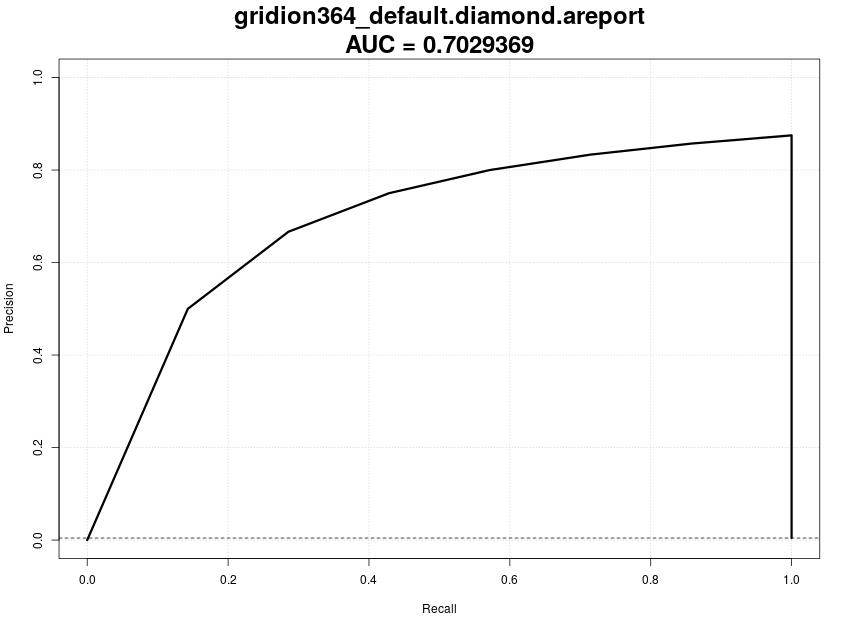 |  GridION364: PR Curve, Kaiju (default), no Fungi") |
Figure S2: GridION364: PR Curve for Diamond and Kaiju (default), no Fungi. These PR curves show that there is no difference in precision and recall whether fungal sequences are considered for the calculation or not. (a) is based on Diamond's output, (b) on Kaiju's.
 |
GridION364: Piechart for Classification Results of Diamond (default), Genus Level. Diamond is able to identify at least six genera that are included in the sample (abundances ranging from 1.799% to 9.495% for GridION364, default database). Considering the CS Log sample, Diamond identifies Listeria* (59.844%) and Pseudomonas (4.035%). With the custom database, Diamond achieves similar abundances. |
Figure S3: Piecharts of Classification Results, Diamond, Default Database, Genus Level.
| 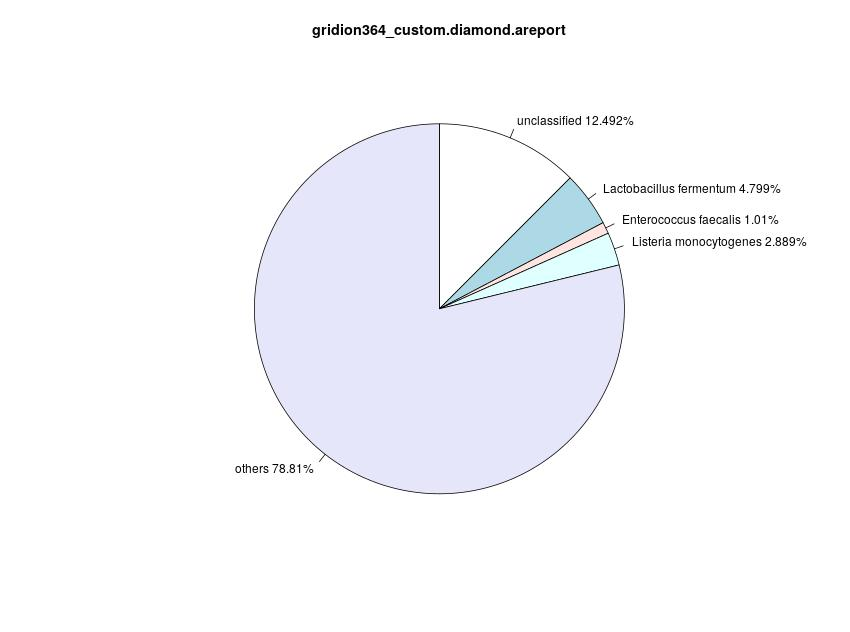 | (a) GridION364: Piechart for Classification Results of Diamond (custom). It can be seen that the classification against the custom database resulted in the same idnetified species with similar abundancies. The diagram shows the three species classified with more than 1% of reads assigned: Listeria monocytogenes (2.879%), Enterococcus faecalis (1.01%) and Limosilactobacillus fermentum (4.799%). 78.81% of the reads could not be assigned to a species, but other taxa and 12.492% of the reads could not be assigned at all. |
 GridION366: Piechart for Classification Results of Diamond (custom)") |
(b) GridION366: Piechart for Classification Results of Diamond (custom). !!! |
Figure S4: Classification Results of Diamond, Custom Database.
| 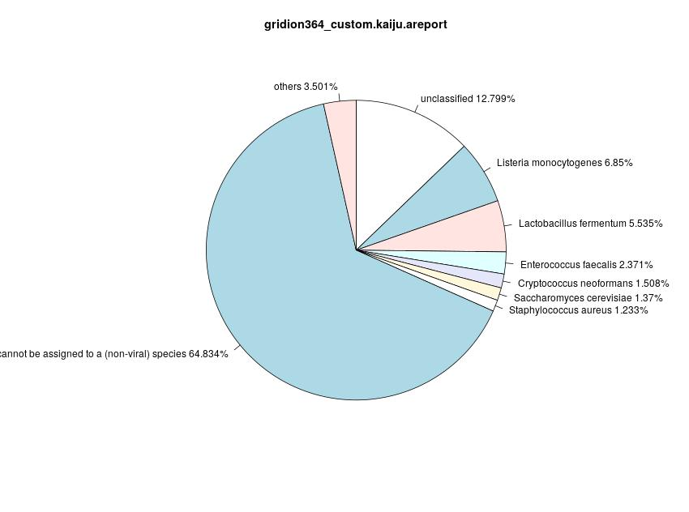 | (a) GridION364: Piechart for Classification Results of Kaiju (custom). Kaiju is not able to classify 12.799% of the reads and assigns 64.834% of the reads to different taxonomic ranks. 3.501% or the reads are assigned to a species that does not reaches 1% of reads. Kaiju is able to assign 1.508% to the fungal species Cryptococcus neoformans, Staphylococcus aureus, Enterococcus faecalis and Saccharomyces cerevisiae reach abundances in a similar scope. Listeria monocytogenes and Limosilactobacillus fermentum have the highest number of reads assigne to with 6.85% and 5.535%, respectively. |
 PromethION365: Piechart for Classification Results of Kaiju (custom)") |
(b) PromethION365: Piechart for Classification Results of Kaiju (custom). Kaiju is not able to classify 15.244% of the reads and assigns 63.034% of the reads to different taxonomic ranks. 3.482% or the reads are assigned to a species that does not reaches 1% of reads. Kaiju is able to assign 1.484% to the fungal species Cryptococcus neoformans, Staphylococcus aureus, Enterococcus faecalis and Saccharomyces cerevisiae reach abundances in a similar scope. Listeria monocytogenes and Limosilactobacillus fermentum have the highest number of reads assigne to with 6.641% and 5.323%, respectively. |
| 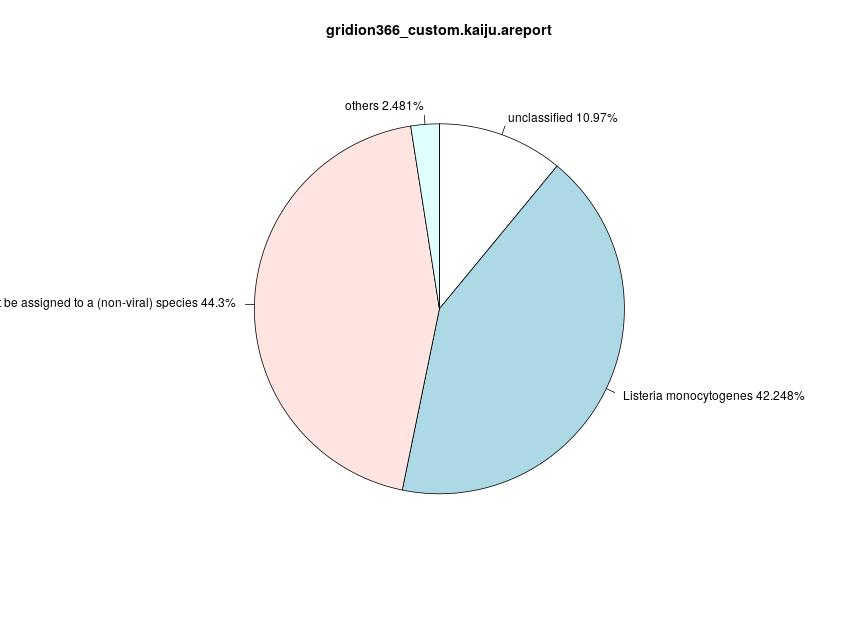 | (a) GridION366: Piechart for Classification Results of Kaiju (custom). With the custom database and the CS Log sample, Kaiju is not able to assign the majority of reads to Listeria monocytogenes. 42.248% are assigned to that species, but 44.3% of reads are assigned to a different taxonomic rank. In total, 10.97% are unclassified and 2.481% of the reads are assigned to different species that did not reach the 1% abundance. |
| 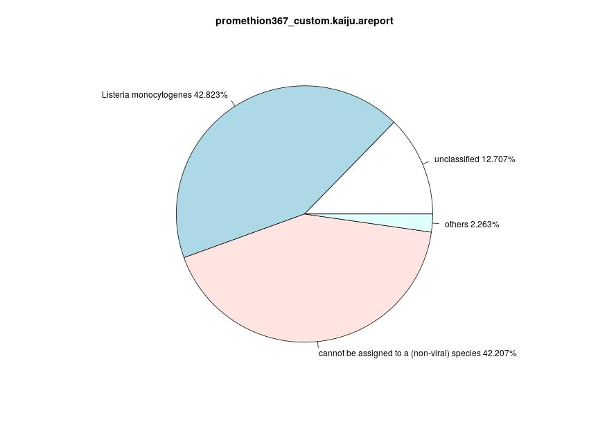 | (b) PromethION367: Piechart for Classification Results of Kaiju (custom). With the custom database and the CS Log sample, Kaiju is able to assign the majority of reads to Listeria monocytogenes (42.823%), the percentage of reads assigned to a different taxonomic rank is only slightly smaller (42.207%) In total, 12.707% are unclassified and 2.263% of the reads are assigned to different species that did not reach the 1% abundance. |
Figure S5: Classification results of Kaiju, Custom Database.
| 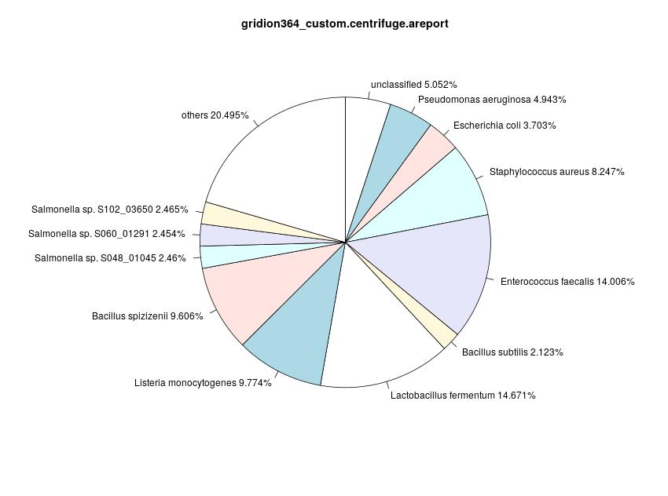 | (a) GridION364: Piechart for Classification Results of Centrifuge (custom). Centrifuge is able to identify the majority of the bacterial species correctly. Although the fungal species are included into the custom database, none are identified. Instead, Bacillus spizizenii is assigned 9.606% of reads, Salmonella enterica is not identified, but three currently unclassified Salmonella species and 14.671% od reads are classifies as Limosilactobacillus fermentum. The amount of reads assigned to something on another taxonomic rank has increased to 20.495%, whereas the percentage of unclassified reads decreased to 5.052%. This is also true for the absolute number of reads. |
 PromethION365: Piechart for Classification Results of Centifuge (custom)") |
(b) PromethION365: Piechart for Classification Results of Centifuge (custom). Centrifuge is able to identify the majority of the bacterial species correctly. Although the fungal species are included into the custom database, none are identified. Instead, Bacillus spizizenii is assigned 9.169% of reads, Salmonella enterica is not identified, but three currently unclassified Salmonella species and 13.57% od reads are classifies as Limosilactobacillus fermentum. The amount of reads assigned to something on another taxonomic rank has increased to 23.762%, whereas the percentage of unclassified reads decreased to 5.493%. This is also true for the absolute number of reads. |
| 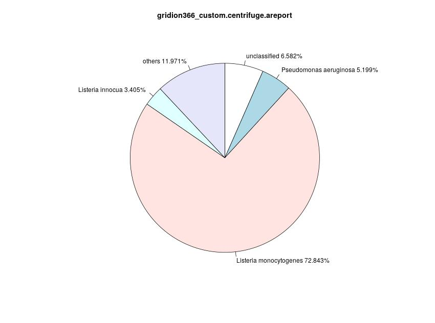 | (c) GridION366: Piechart for Classification Results of Centrifuge (custom). In this sample, 6.582 of reads could not be classified at all and 11.971% of reads are assigned to taxa that are not on species level or the corresponding species has below 1% abundance. The remaining reads are assigned to Listeria monocytogenes (72.843%), Pseudomonas aeruginosa (5.199%) and Listeria innocua (3.405%) |
| 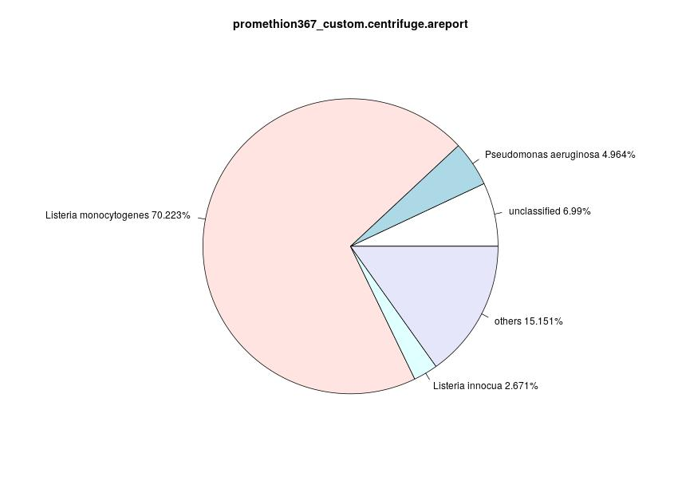 | (d) PromethION367: Piechart for Classification Results of Centifuge (custom). In this sample, 10.4% of reads could not be classified at all and 4.805% of reads are assigned to taxa that are not on species level or the corresponding species has below 1% abundance. The remaining reads are assigned to Listeria monocytogenes (70.223%), Pseudomonas aeruginosa (4.964%) and Listeria innocua (2.671%). |
Figure S6: Classification Results for Centrifuge, Custom Database
| 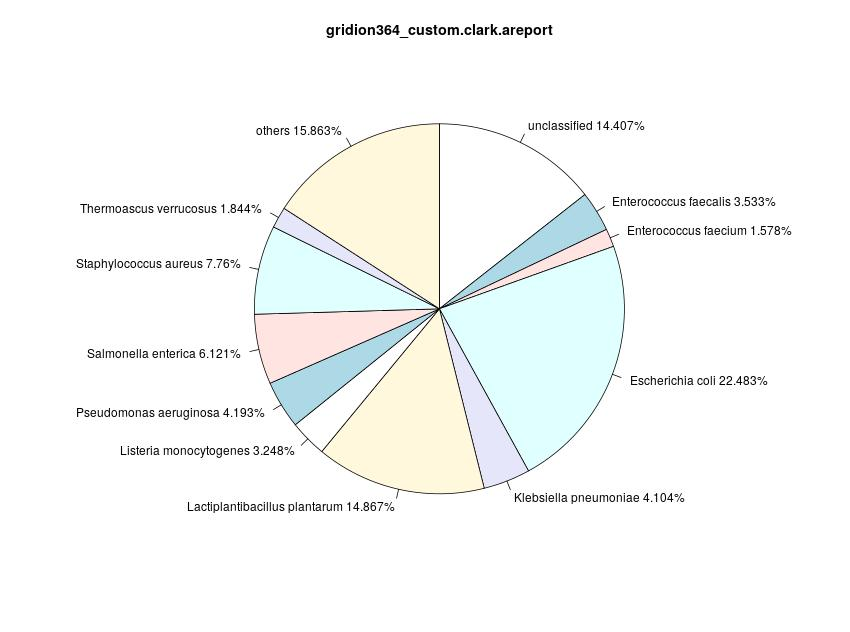 | (a) GridION364: Piechart for Classification Results of CLARK (custom). Although the majority of bacterial species of the sample are identified with the exception of Bacillus subtilis and Listeria monocytogenes, the classifiation result varies from the outcome using the default database. There are various new species with abundances ranging from 1.578% to 14.867%. The latter percentage of reads is assigned to Lactiplantibacillus plantarum which is previously known as Lactobacillus plantarum, which could explain the number of reads assigned to it, since Lactobacillus fermentum is a species in the dataset. Other species, however, do not have a connection to species of the dataset like Thermoascus verrucosus, which is a fungus, or Klebsiella pneumoniae. The fungal species of the dataset, however, are not identified with more than 1% of reads. In general, 14.407% of the reads are unclassified, whereas 15.863% of the reads are assigned to species that did not reach the 1% abundance or to other taxonomic rank. |
| 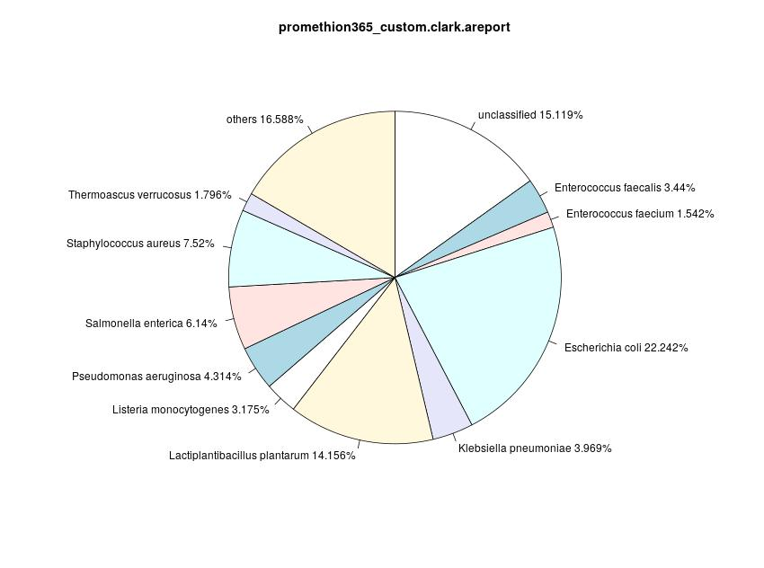 | (b) PromethION365: Piechart for Classification Results of CLARK (custom). Although the majority of bacterial species of the sample are identified with the exception of Bacillus subtilis and Listeria monocytogenes, the classifiation result varies from the outcome using the default database. There are various new species with abundances ranging from 1.542% to 14.156%. The latter percentage of reads is assigned to Lactiplantibacillus plantarum which is previously known as Lactobacillus plantarum, which could explain the number of reads assigned to it, since Lactobacillus fermentum is a species in the dataset. Other species, however, do not have a connection to species of the dataset like Thermoascus verrucosus, which is a fungus, or Klebsiella pneumoniae. The fungal species of the dataset, however, are not identified with more than 1% of reads. In general, 15.119% of the reads are unclassified, whereas 16.588% of the reads are assigned to species that did not reach the 1% abundance or to other taxonomic rank. |
| 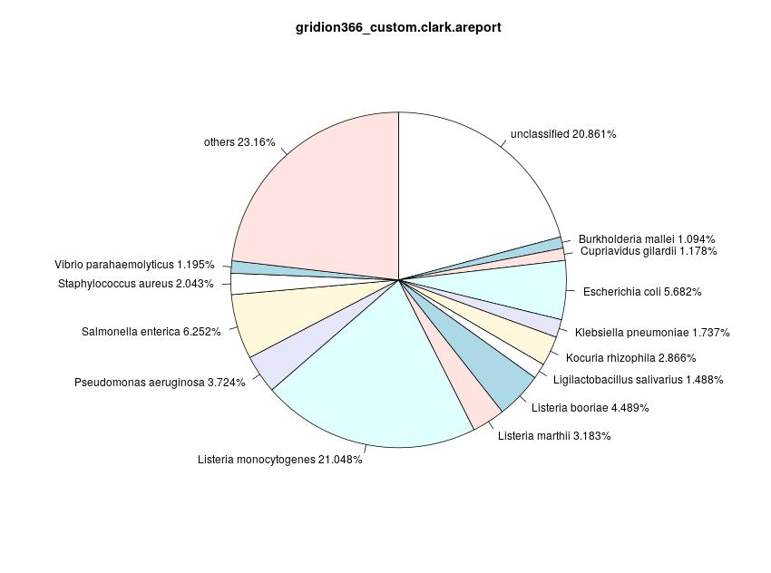 | (c) GridION366: Piechart for Classification Results of CLARK (custom). The classification results of this sample vary a lot from those using the default database. Instead of a predominant assignment to Listeria monocytogenes (which still has a fifth of reads assigned to), there are several species with small amounts of reads ranging between 1.094% to 6.252% including Escherichia coli, Salmonella enterica and Staphylococcus aureus, but also species like Klebsiella penumoniae and Kocuria rhizophila, which do not belong to the species of the dataset. In general, 20.861% of the reads are unclassified, whereas 23.16% of the reads are assigned to species that did not reach the 1% abundance or to other taxonomic rank. |
| 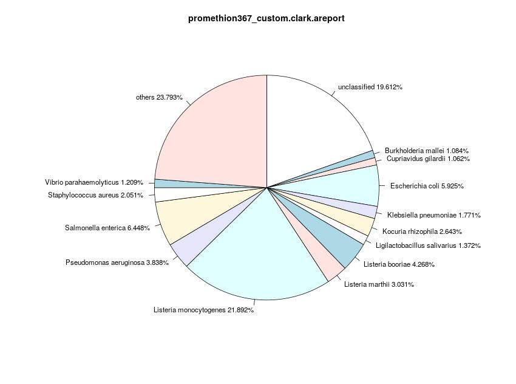 | (d) PromethION367: Piechart for Classification Results of CLARK (custom). The classification results of this sample vary a lot from those using the default database. Instead of a predominant assignment to Listeria monocytogenes (which still has a fifth of reads assigned to), there are several species with small amounts of reads ranging between 1.062% to 5.925% including Escherichia coli, Salmonella enterica and Staphylococcus aureus, but also species like Klebsiella penumoniae and Kocuria rhizophila, which do not belong to the species of the dataset. In general, 19.612% of the reads are unclassified, whereas 23.793% of the reads are assigned to species that did not reach the 1% abundance or to other taxonomic rank. |
Figure S7: Classification Results for CLARK, Custom Database
 GridION364: Piechart for Classification Results of Kraken2 (custom)") |
(a) GridION364: Piechart for Classification Results of Kraken2 (custom). The most dominant species are Limosilactobacillus fermentum (13.963%) and Listeria monocytogenes (13.043%), but Staphylococcus aureus (10.633%), Bacillus spizizenii (10.531%) and Enterococcus faecalis (10.513%) follow with slightly less assigned reads. There are 9.56% of reads that could not be assigned at all and 8.289% are assigned to other taxonomic rank or species with less than 1% abundance. The bacterial species Bacillus substilis, Salmonella enterica, Escherichia coli and Pseudomonas aeruginosa range from 3.699% to 5.777%, whereas the two fungal species Cryptococcus neoformans and Saccharomyces cerevisiae have each around 2% of reads assigned (1.896% and 2.088%, respectively). |
| 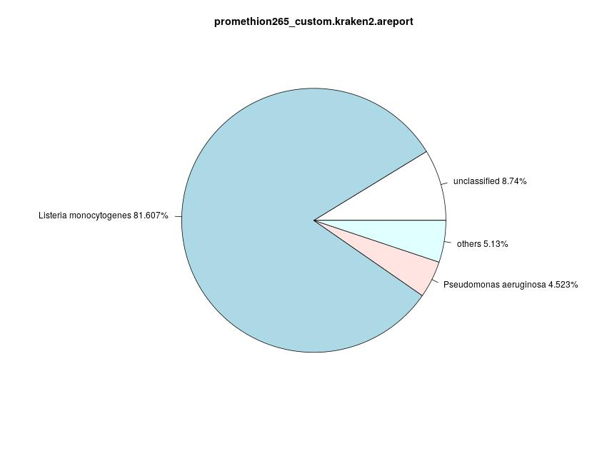 | (b) PromethION365: Piechart for Classification Results of Kraken2 (custom). The most dominant species are Limosilactobacillus fermentum (13.32%) and Listeria monocytogenes (12.626%), but Bacillus spizizenii (10.328%), Staphylococcus aureus (10.296%) and Enterococcus faecalis (10.231%) follow with slightly less assigned reads. There are 11.76% of reads that could not be assigned at all and 8.181% are assigned to other taxonomic rank or species with less than 1% abundance. The bacterial species Bacillus substilis, Salmonella enterica, Escherichia coli and Pseudomonas aeruginosa range from 3.718% to 5.793%, whereas the two fungal species Cryptococcus neoformans and Saccharomyces cerevisiae have each around 2% of reads assigned (1.852% and 2.012%, respectively). |
 GridION366: Piechart for Classification Results of Kraken2 (custom)") |
(c) GridION366: Piechart for Classification Results of Kraken2 (custom). Kraken2 is able to assign the majoity of reads to Listeria monocytogenes with 81.607%. 4.523% are assigned to Pseudomonas aeruginosas and 8.74% of reads are not classified at all. The percentage of reads that are classified to a taxon not on species level or a species with less than 1% abundance is 5.13%. In contrast to the default database, Bacillus subtilis has a lower abundance than 1%. |
| 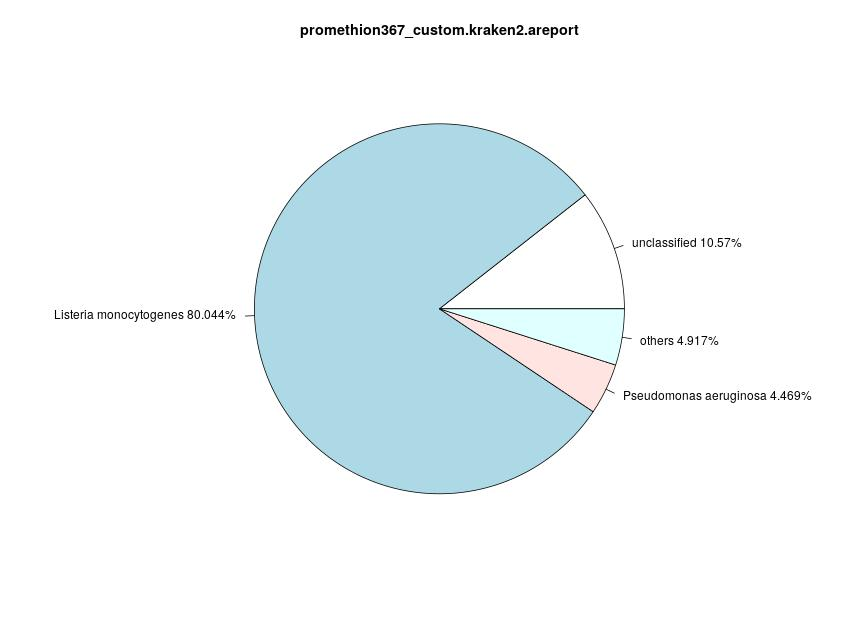 | (d) PromethION367: Piechart for Classification Results of Kraken2 (custom). Kraken2 is able to assign the majoity of reads to Listeria monocytogenes with 80.044%. 4.469% are assigned to Pseudomonas aeruginosas and 10.57% of reads are not classified at all. The percentage of reads that are classified to a taxon not on species level or a species with less than 1% abundance is 4.917%. In contrast to the default database, Bacillus subtilis has a lower abundance than 1%. |
Figure S8: Classification Results for Kraken2, Custom Database
 |
 |
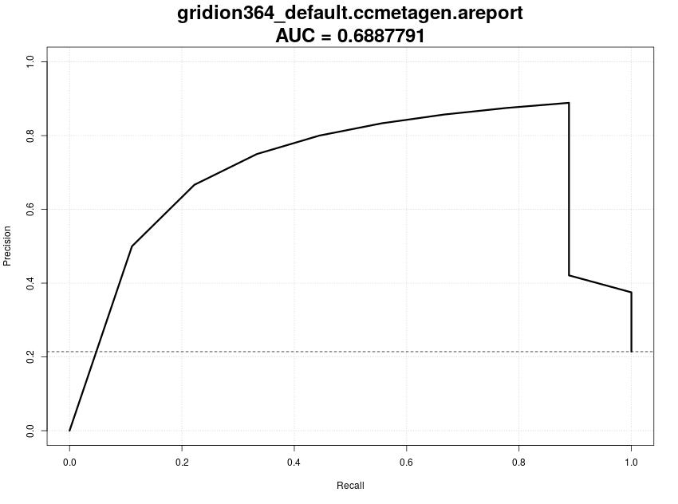 | 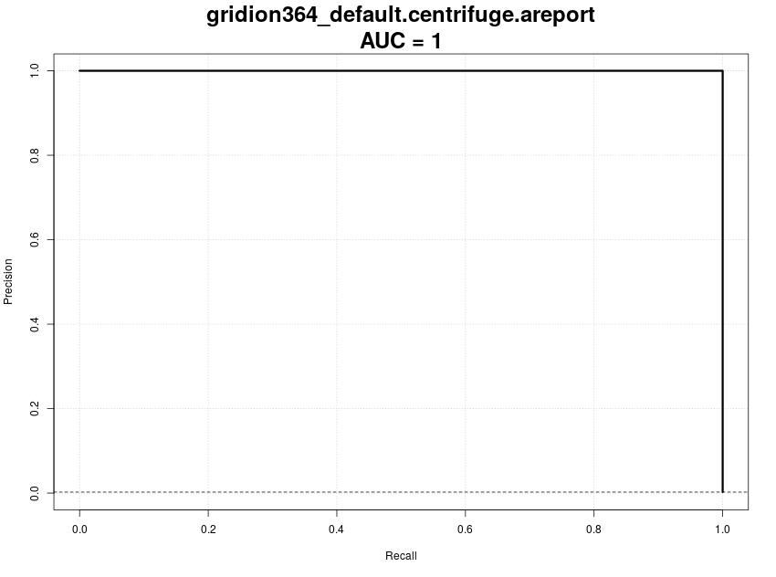 | 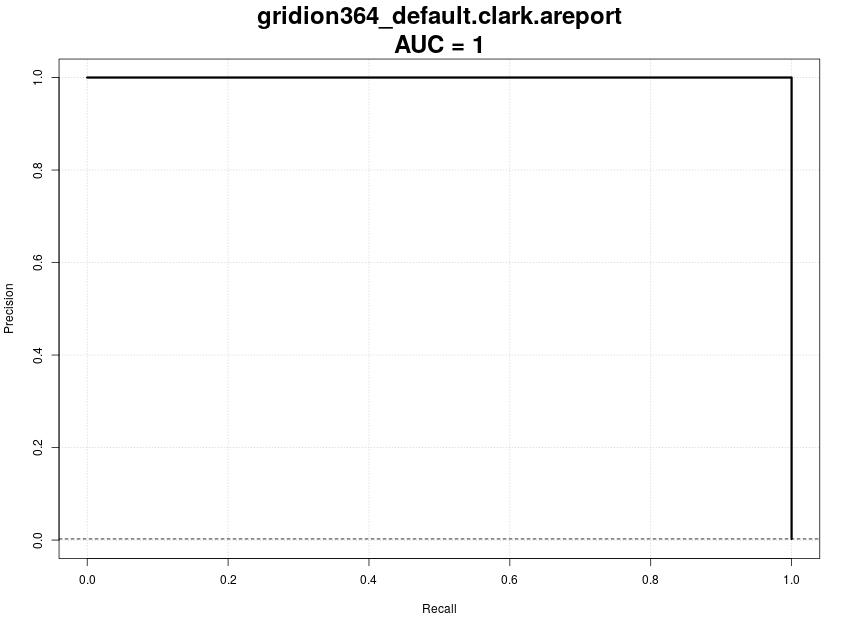 |  |
| GridION364: PR Curve for Diamond (default). | GridION364: PR Curve for Kaiju (default). | GridION364: PR Curve for CCMetagen (default). | GridION364: PR Curve for Centrifuge (default). | GridION364: PR Curve for CLARK (default). | GridION364: PR Curve for Kraken2 (default). |
| AUC: 1.0 | AUC: 0.7253469 | AUC: 0.6887791 | AUC: 1.0 | AUC: 1.0 | AUC: 1.0 |
| 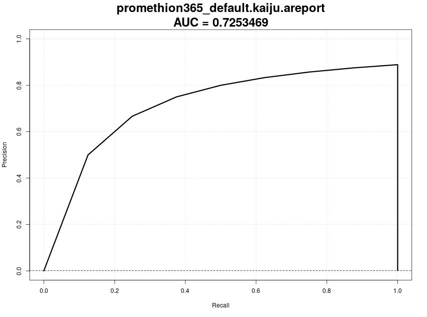 | 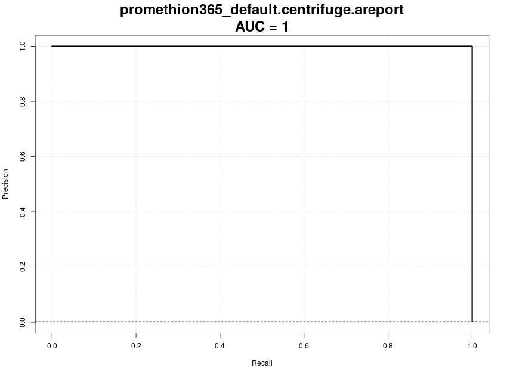 |  |
 |
||
| PromethION365: PR Curve for Kaiju (default). | PromethION365: PR Curve for Centrifuge (default). | PromethION365: PR Curve for CLARK (default). | PromethION365: PR Curve for Kraken2 (default). | ||
| AUC: 0.7253469 | AUC: 1.0 | AUC: 1.0 | AUC: 1.0 | ||
| 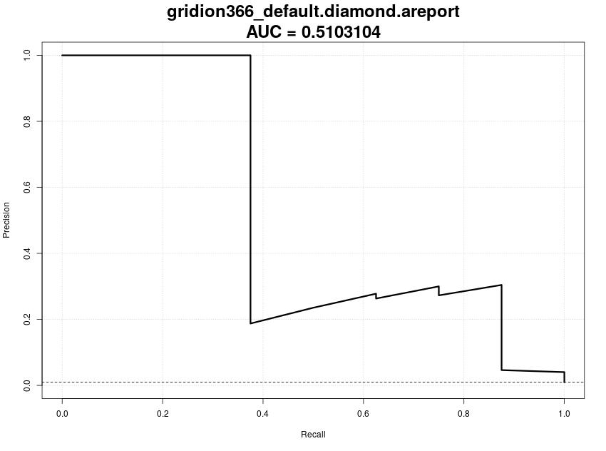 |  |
 |
 |
 |
 |
| GridION366: PR Curve for Diamond (default). | GridION366: PR Curve for Kaiju (default). | GridION366: PR Curve for CCMetagen (default). | GridION366: PR Curve for Centrifuge (default). | GridION366: PR Curve for CLARK (default). | GridION366: PR Curve for Kraken2 (default). |
| AUC: 0.5103104 | AUC: 0.3873827 | AUC: 0.7760189 | AUC: 0.6062113 | AUC: 0.6914607 | AUC: 0.6724297 |
 |
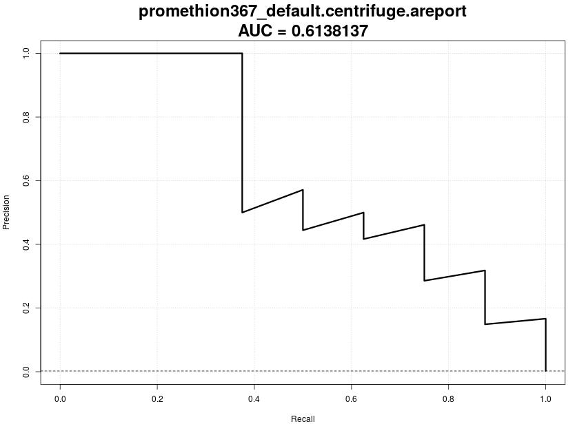 |  |
 |
||
| PromethION367: PR Curve for Kaiju (default). | PromethION367: PR Curve for Centrifuge (default). | PromethION367: PR Curve for CLARK (default). | PromethION367: PR Curve for Kraken2 (default). | ||
| AUC: 0.3896924 | AUC: 0.6138137 | AUC: 0.7315841 | AUC: 0.6965986 |
Figure S9: Overview of the different Precision Recall Curves, Default Database. This figure shows the precision recall curves and the corresponding Aurea under the Curve (AUC) for each classification run. It can be seen, that most tools are able to achieve a value of one for the CS Even samples, but CCMetagen and Kaiju show a sligthly poorer result. The results for the CS Log samples show poorer results, no tool is able to achieve the value of a perfect classifier.
 |
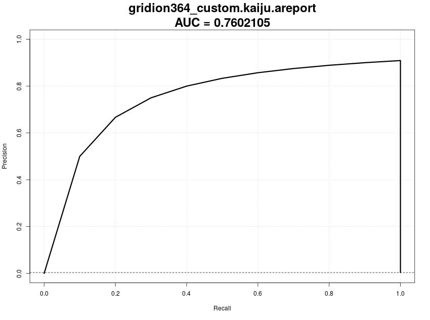 |  |
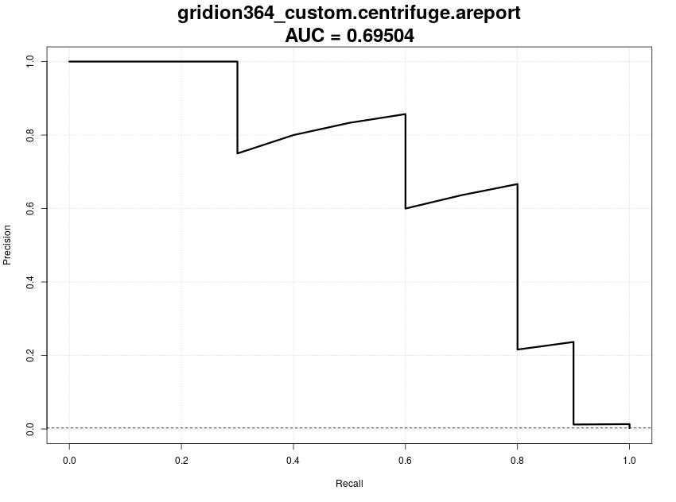 | 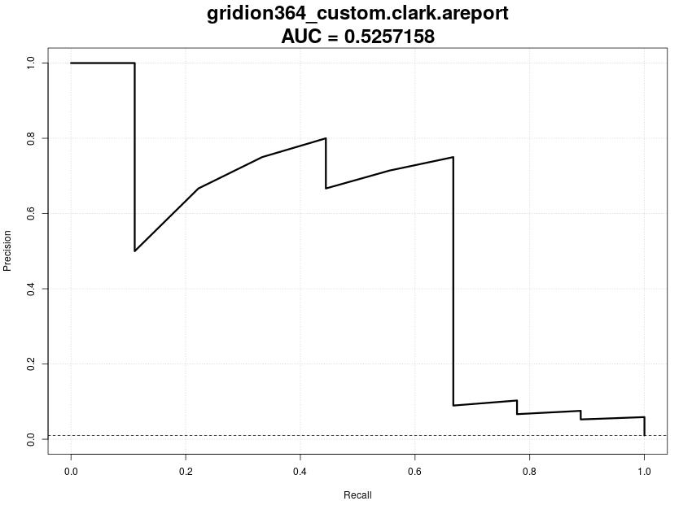 | 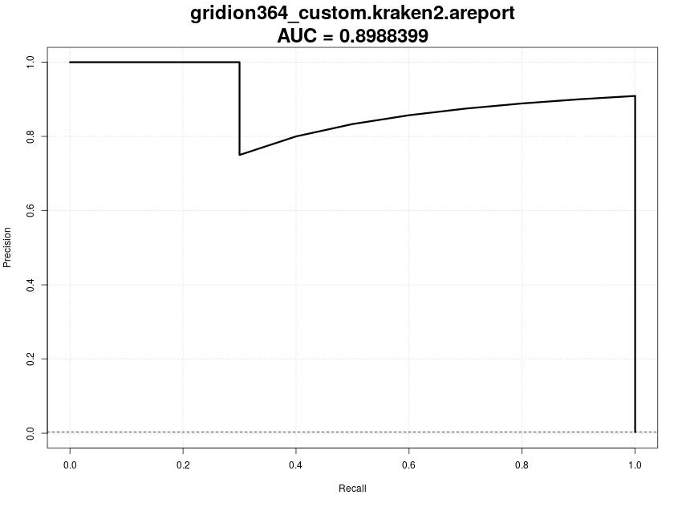 |
| GridION364: PR Curve for Diamond (custom). | GridION364: PR Curve for Kaiju (custom). | GridION364: PR Curve for CCMetagen (custom). | GridION364: PR Curve for Centrifuge (custom). | GridION364: PR Curve for CLARK (custom). | GridION364: PR Curve for Kraken2 (custom). |
| AUC: 0.7602105 | AUC: 0.7602105 | AUC: - | AUC: 0.69504 | AUC: 0.5257158 | AUC: 0.8988399 |
 |
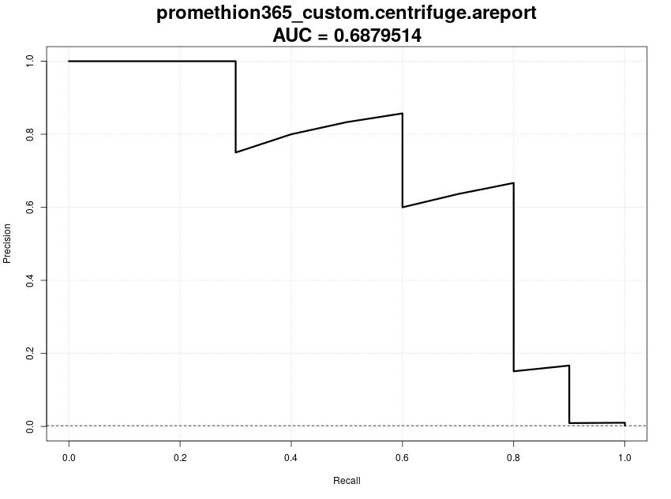 |  |
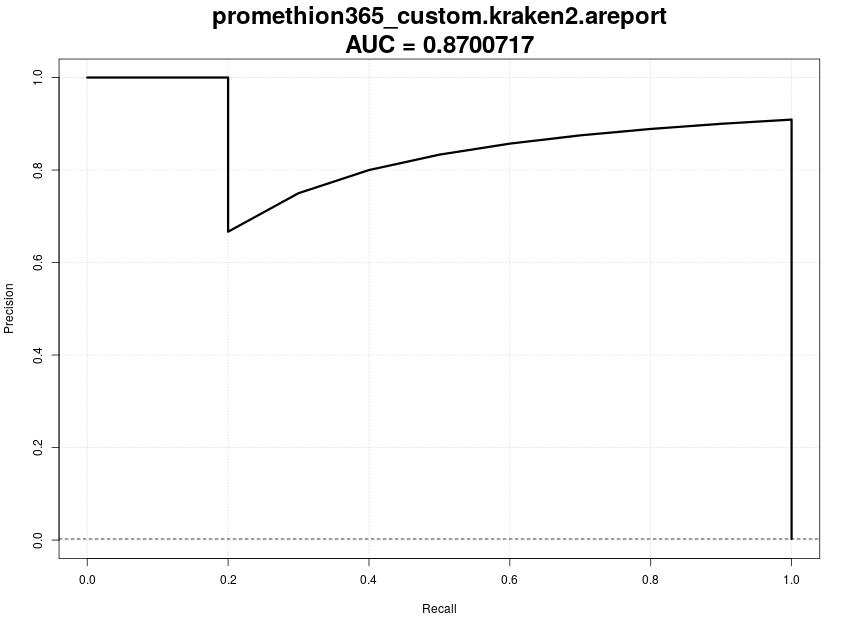 | ||
| PromethION365: PR Curve for Kaiju (custom). | PromethION365: PR Curve for Centrifuge (custom). | PromethION365: PR Curve for CLARK (custom). | PromethION365: PR Curve for Kraken2 (custom). | ||
| AUC: 0.5702636 | AUC: 0.6879514 | AUC: 0.523079 | AUC: 0.8700717 | ||
 |
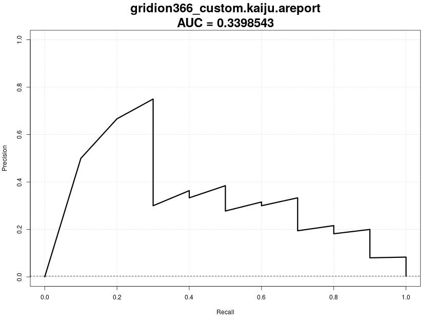 |  |
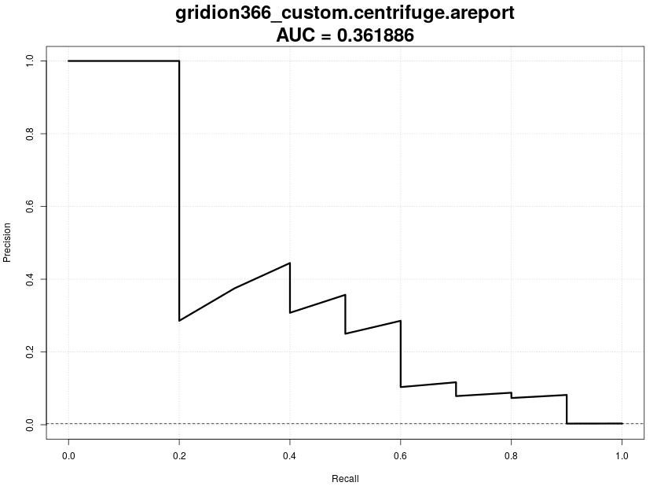 |  |
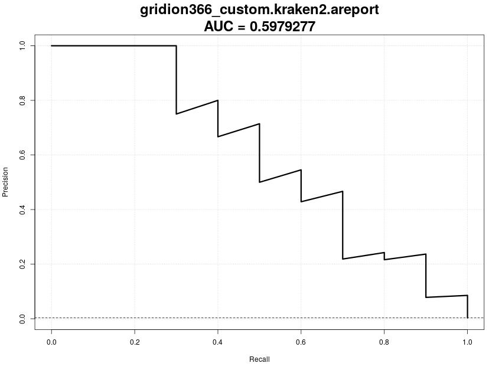 |
| GridION366: PR Curve for Diamond (custom). | GridION366: PR Curve for Kaiju (custom). | GridION366: PR Curve for CCMetagen (custom). | GridION366: PR Curve for Centrifuge (custom). | GridION366: PR Curve for CLARK (custom). | GridION366: PR Curve for Kraken2 (custom). |
| AUC: -!!! | AUC: 0.3398543 | AUC: - | AUC: 0.361886 | AUC: 0.5102082 | AUC: 0.5979277 |
 |
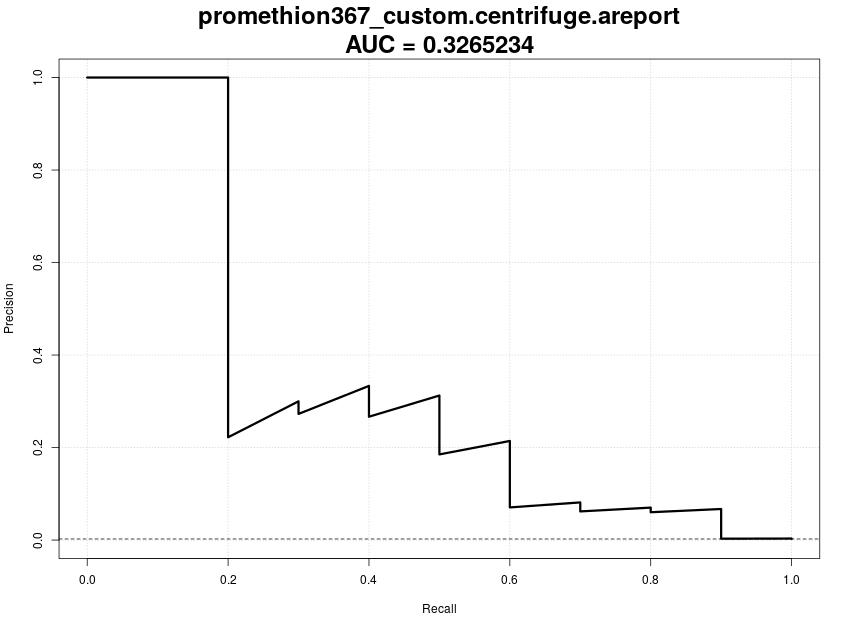 | 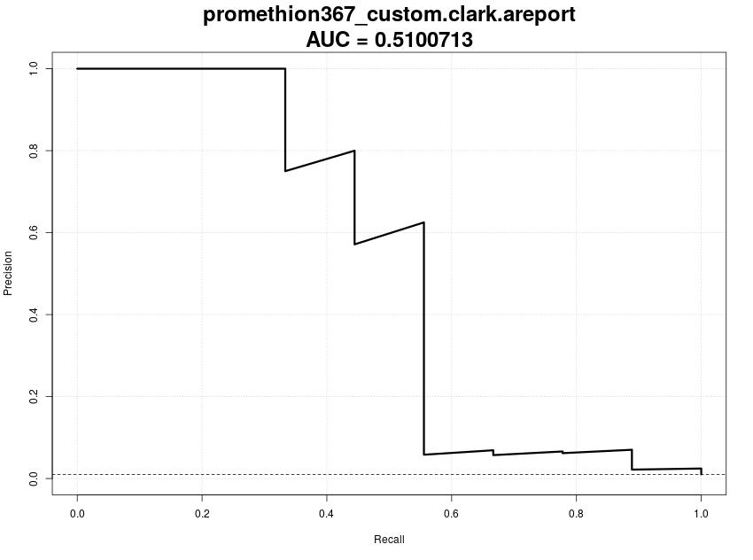 | 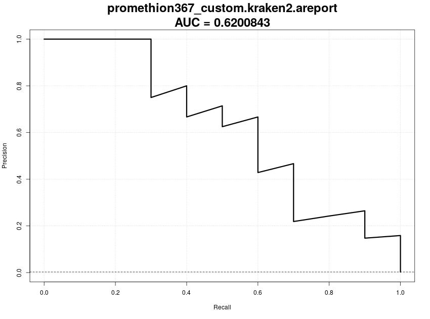 | ||
| PromethION367: PR Curve for Kaiju (custom). | PromethION367: PR Curve for Centrifuge (custom). | PromethION367: PR Curve for CLARK (custom). | PromethION367: PR Curve for Kraken2 (custom). |
Figure S10: Overview of the different Precision Recall Curves, Custom Database. This figure shows the precision recall curves and the corresponding Aurea under the Curve (AUC) for each classification run. In comparison to the classification with the default database, the tools achive poorer results for the custom database.
[1] Datta, S., Rajnish, K. N., Samuel, M. S., Pugazlendhi, A., & Selvarajan, E. (2020). Metagenomic applications in microbial diversity, bioremediation, pollution monitoring, enzyme and drug discovery. A review. Environmental Chemistry Letters, 18(4), 1229-1241.
[2] Li, W., Fu, L., Niu, B., Wu, S., & Wooley, J. (2012). Ultrafast clustering algorithms for metagenomic sequence analysis. Briefings in bioinformatics, 13(6), 656-668.
[3] Lu, H., Giordano, F., & Ning, Z. (2016). Oxford Nanopore MinION sequencing and genome assembly. Genomics, proteomics & bioinformatics, 14(5), 265-279.
[4] Wood, D. E., Lu, J., & Langmead, B. (2019). Improved metagenomic analysis with Kraken 2. Genome biology, 20(1), 1-13.
[5] Ounit, R., Wanamaker, S., Close, T. J., & Lonardi, S. (2015). CLARK: fast and accurate classification of metagenomic and genomic sequences using discriminative k-mers. BMC genomics, 16(1), 1-13.
[6] Marcelino, V. R., Clausen, P. T., Buchmann, J. P., Wille, M., Iredell, J. R., Meyer, W., ... & Holmes, E. C. (2020). CCMetagen: comprehensive and accurate identification of eukaryotes and prokaryotes in metagenomic data. Genome biology, 21, 1-15.
[7] Kim, D., Song, L., Breitwieser, F. P., & Salzberg, S. L. (2016). Centrifuge: rapid and sensitive classification of metagenomic sequences. Genome research, 26(12), 1721-1729.
[8] Menzel, P., Ng, K. L., & Krogh, A. (2016). Fast and sensitive taxonomic classification for metagenomics with Kaiju. Nature communications, 7(1), 1-9.
[9] Buchfink, B., Xie, C., & Huson, D. H. (2015). Fast and sensitive protein alignment using DIAMOND. Nature methods, 12(1), 59-60.
[10] Simon, H. Y., Siddle, K. J., Park, D. J., & Sabeti, P. C. (2019). Benchmarking metagenomics tools for taxonomic classification. Cell, 178(4), 779-794.
[11] Morgan, X. C., Tickle, T. L., Sokol, H., Gevers, D., Devaney, K. L., Ward, D. V., ... & Huttenhower, C. (2012). Dysfunction of the intestinal microbiome in inflammatory bowel disease and treatment. Genome Biology, 13(9), 1-18.
[12] Zymo Research Corporation, Irvine, CA, USA. Product D6300, Lot ZRC190633
[13] Zymo Research Corporation, Irvine, CA, USA. Product D6310, Lot ZRC190842
[14] Nicholls, S. M., Quick, J. C., Tang, S., & Loman, N. J. (2019). Ultra-deep, long-read nanopore sequencing of mock microbial community standards. Gigascience, 8(5), giz043.
[15] Clausen, P. T., Aarestrup, F. M., & Lund, O. (2018). Rapid and precise alignment of raw reads against redundant databases with KMA. BMC bioinformatics, 19(1), 1-8.
[16] Anaconda Software Distribution. (2020). Anaconda Documentation. Anaconda Inc. Retrieved from https://docs.anaconda.com/
[17] Köster, J., & Rahmann, S. (2012). Snakemake—a scalable bioinformatics workflow engine. Bioinformatics, 28(19), 2520-2522.
[18] Altschul, S. F., Gish, W., Miller, W., Myers, E. W., & Lipman, D. J. (1990). Basic local alignment search tool. Journal of molecular biology, 215(3), 403-410.
[19] Jens Keilwagen, Ivo Grosse and Jan Grau (2014). Area under Precision-Recall Curves for Weighted and Unweighted Data. PLOS ONE (9) 3.
[20] Dingle, T. C., & MacCannell, D. R. (2015). Molecular strain typing and characterisation of toxigenic Clostridium difficile. Methods in Microbiology, 42, 329-357.
[21] Public databases for molecular typing and microbial genome diversity. Multi-Locus Sequence Typing. Retrieved from https://pubmlst.org/multilocus-sequence-typing. Last visited on 21/04/2021.
[22] Poluektova, E. U., Yunes, R. A., Epiphanova, M. V., Orlova, V. S., & Danilenko, V. N. (2017). The Lactobacillus rhamnosus and Lactobacillus fermentum strains from human biotopes characterized with MLST and toxin-antitoxin gene polymorphism. Archives of microbiology, 199(5), 683-690.
[23] Meyer, W., Aanensen, D. M., Boekhout, T., Cogliati, M., Diaz, M. R., Esposto, M. C., ... & Kwon-Chung, J. (2009). Consensus multi-locus sequence typing scheme for Cryptococcus neoformans and Cryptococcus gattii. Medical mycology, 47(6), 561-570.
[24] Eeom, Y. J., Son, S. Y., Jung, D. H., Hur, M. S., Kim, C. M., Park, S. Y., ... & Park, C. S. (2018). Diversity analysis of Saccharomyces cerevisiae isolated from natural sources by multilocus sequence typing (MLST). Food science and biotechnology, 27(4), 1119-1127.
[25] Fan, J., Huang, S., & Chorlton, S. D. (2021). BugSeq: a highly accurate cloud platform for long-read metagenomic analyses. BMC bioinformatics, 22(1), 1-12.
[26] Zheng, J., Wittouck, S., Salvetti, E., Franz, C. M., Harris, H. M., Mattarelli, P., ... & Lebeer, S. (2020). A taxonomic note on the genus Lactobacillus: Description of 23 novel genera, emended description of the genus Lactobacillus Beijerinck 1901, and union of Lactobacillaceae and Leuconostocaceae. International journal of systematic and evolutionary microbiology, 70(4), 2782-2858.
[27] Dunlap, C. A., Bowman, M. J., & Zeigler, D. R. (2020). Promotion of Bacillus subtilis subsp. inaquosorum, Bacillus subtilis subsp. spizizenii and Bacillus subtilis subsp. stercoris to species status. Antonie van Leeuwenhoek, 113(1), 1-12.
[28] Rosen, G. L., Reichenberger, E. R., & Rosenfeld, A. M. (2011). NBC: the Naive Bayes Classification tool webserver for taxonomic classification of metagenomic reads. Bioinformatics, 27(1), 127-129.
[29] Ainsworth, D., Sternberg, M. J., Raczy, C., & Butcher, S. A. (2017). k-SLAM: accurate and ultra-fast taxonomic classification and gene identification for large metagenomic data sets. Nucleic acids research, 45(4), 1649-1656.
[30] Guerrini, V., Louza, F. A., & Rosone, G. (2020). Metagenomic analysis through the extended Burrows-Wheeler transform. BMC bioinformatics, 21(8), 1-25.
[31] Corvelo, A., CLARKe, W. E., Robine, N., & Zody, M. C. (2018). taxMaps: comprehensive and highly accurate taxonomic classification of short-read data in reasonable time. Genome research, 28(5), 751-758.
[32] Liu, X., Yu, Y., Liu, J., Elliott, C. F., Qian, C., & Liu, J. (2018). A novel data structure to support ultra-fast taxonomic classification of metagenomic sequences with k-mer signatures. Bioinformatics, 34(1), 171-178.
[33] Liang, Q., Bible, P. W., Liu, Y., Zou, B., & Wei, L. (2020). DeepMicrobes: taxonomic classification for metagenomics with deep learning. NAR Genomics and Bioinformatics, 2(1), lqaa009.
[34] Schoch, C. L., Ciufo, S., Domrachev, M., Hotton, C. L., Kannan, S., Khovanskaya, R., ... & Karsch-Mizrachi, I. (2020). NCBI Taxonomy: a comprehensive update on curation, resources and tools. Database, 2020.
{kind=link}
{kind=link}
{kind=link}
{kind=link}
{kind=link}
{kind=link}
{kind=link}
{kind=link}
{kind=link}
{kind=link}
{kind=link}
{kind=link}
{kind=link}
{kind=link}
{kind=link}
{kind=link}
{kind=link}